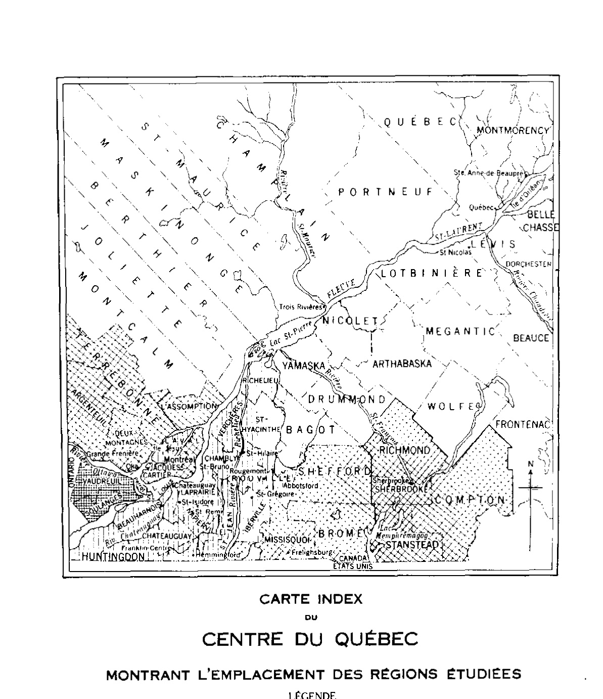
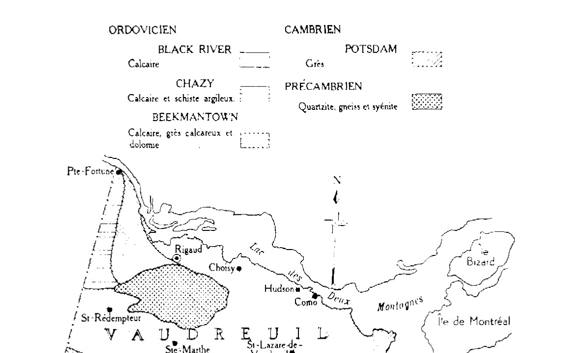
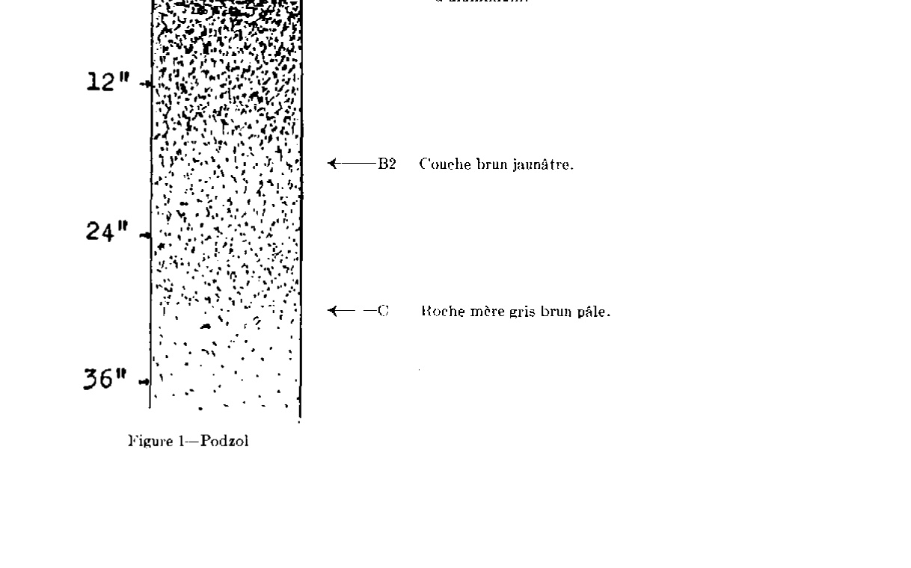
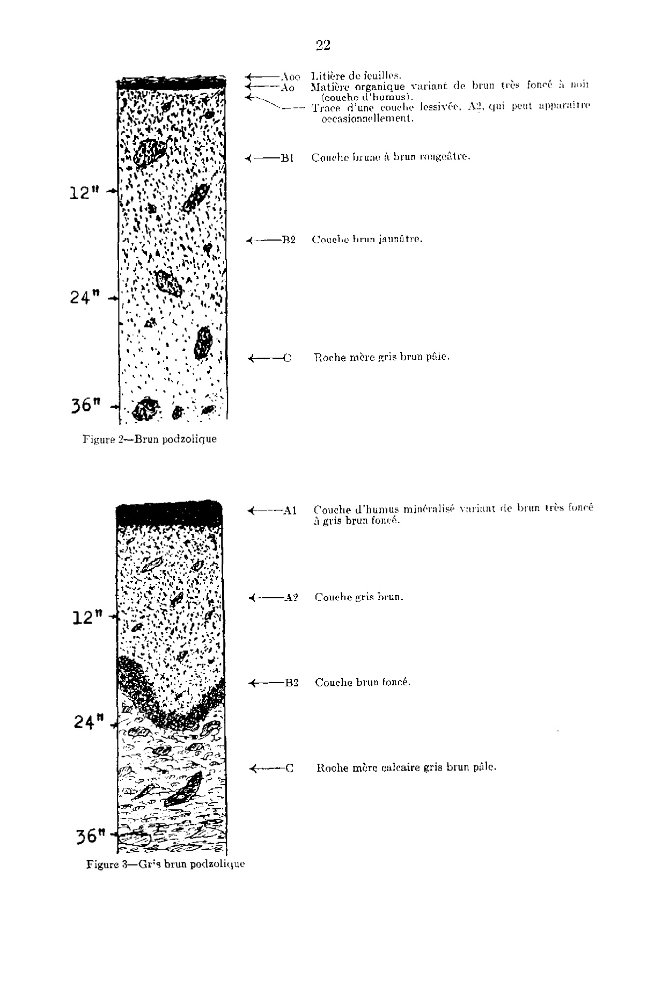
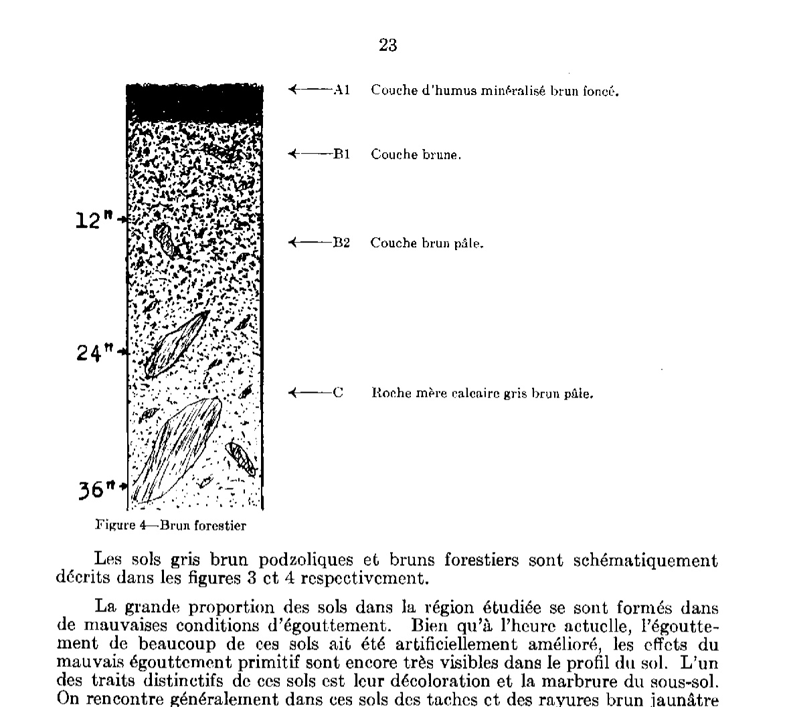
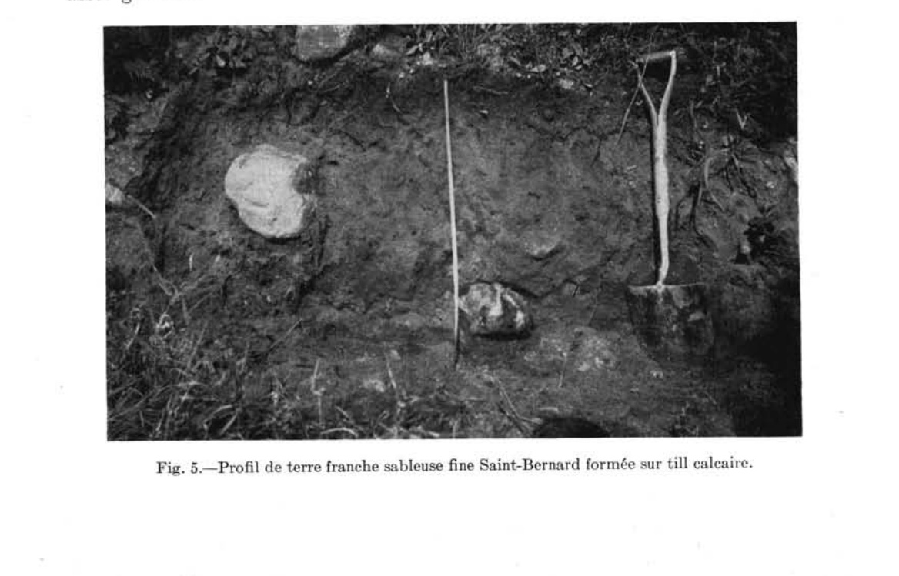
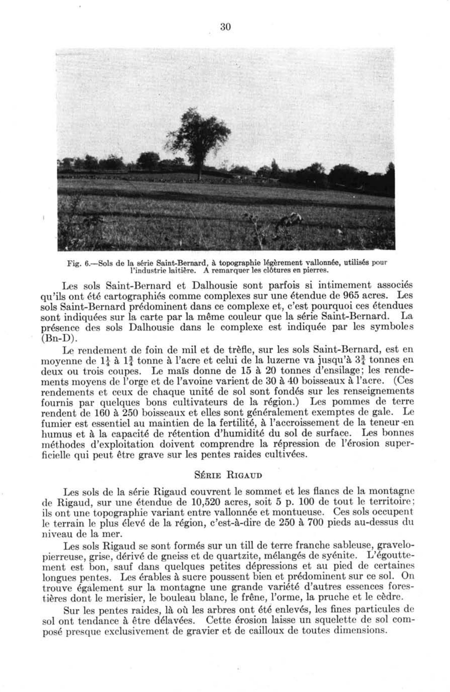
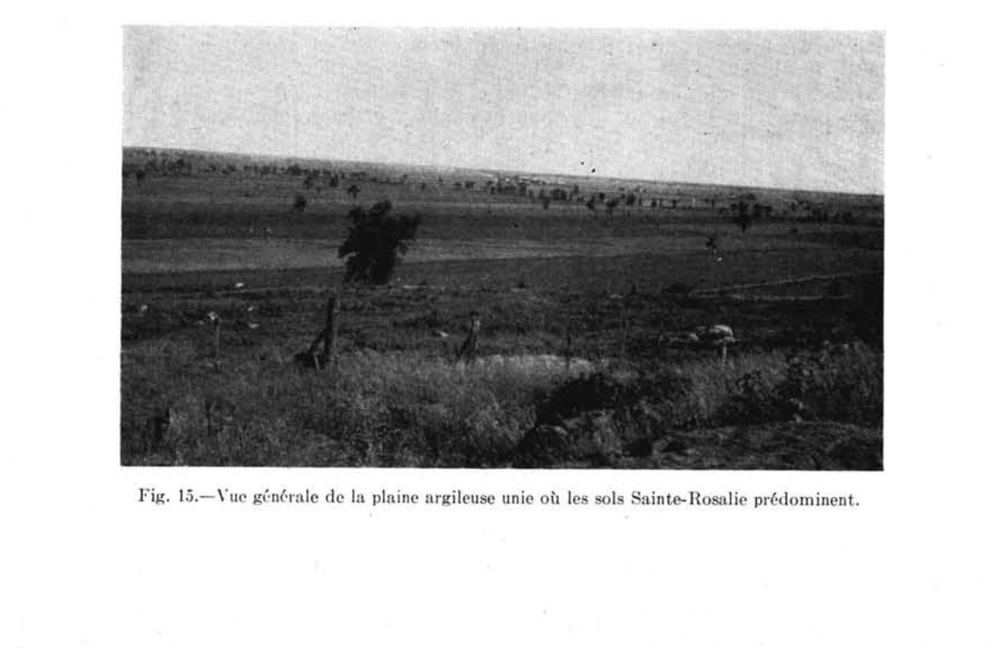
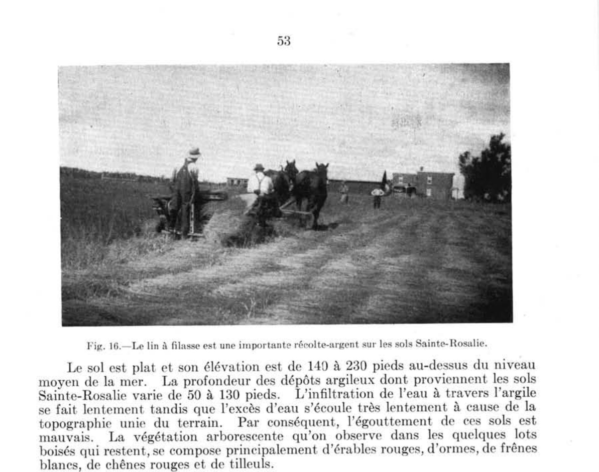
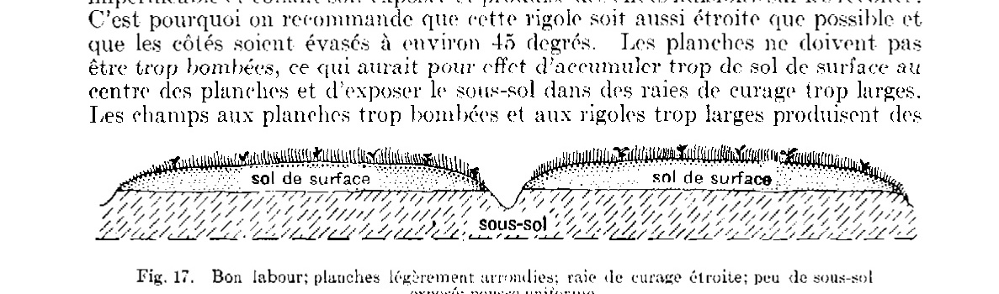

Étude des sols des comtés de Soulanges et de Vaudreuil
Agriculture et Agroalimentaire Canada (SISCan) — Transcription numérique haute fidélité
Table des matières (20 séries de sols répertoriées)
ÉTUDE DES SOLS DES COMTÉS
de
SOULANGES ET DE VAUDREUIL
dans la
PROVINCE DE QUÉBEC
par
P. LAJOIE et P. STOBBE Ministère fédéral de l’Agriculture
Service des fermes expérimentales,
ministère fédéral de l'Agriculture, en
collaboration avec le ministère de l'Agriculture
de Québec et le Collège Macdonald, Université McGill.
OTTAWA
EDMOND CLOUTIER, C.M.G., O.A., D.S.P.
IMPRIMEUR DE SA TRÈS EXCELLENTE MAJESTÉ LE ROI
CONTRÔLEUR DE LA PAPETERIE
25c—14452—9-50
ÉTUDE DES SOLS DES COMTÉS
de
SOULANGES ET DE VAUDREUIL
dans la
PROVINCE DE QUÉBEC
par
P. LAJOIE et P. STOBBE Ministère fédéral de l'Agriculture
Service des fermes expérimentales,
ministère fédéral de l'Agriculture, en
collaboration avec le ministère de l'Agriculture
de Québec et le Collège Macdonald, Université McGill.
REMERCIEMENTS
L
'ÉTUDE des sols des comtés de Soulanges et de Vaudreuil a été financée par le Service des fermes expérimentales du ministère fédéral de l'Agriculture. Le Collège Macdonald a fourni les bureaux et le laboratoire pour les études analytiques. La carte des sols a été préparée pour publication par le service de cartographie des sols, à la Ferme expérimentale centrale, Ottawa.
Les auteurs du présent rapport désirent exprimer leurs remerciements à M. Roger Deblois, agronome, qui a bien voulu fournir des renseignements précieux et faire une lecture critique du manuscrit. Ils remercient également le Dr. W. A. Delong, du Collège Macdonald, des conseils qu'il a donnés au laboratoire, ainsi que le professeur Auguste Scott et son personnel, de Sainte-Anne-de-la-Pocatière, de leur aide et de leur collaboration dans la corrélation des sols.
Ils désirent également remercier M. G. Provencher qui leur a aidé dans les travaux sur les lieux et aussi M. R. F. Bishop qui a effectué une partie des travaux d'analyse.
PAGE
INTRODUCTION
DESCRIPTION DE LA RÉGION
Emplacement et étendue
Physiographie
Topographie
Drainage
Géologie du roc sous-jacent
Géologie des dépôts superficiels
Climatologie
Végétation
Population
Histoire et évolution de l'agriculture
Marchés et moyens de transport
CLASSIFICATION ET MORPHOLOGIE DES SOLS
Méthodes d'étude des sols
Formation du sol
Grands groupes de sols
Séries, types et phases
Clef des sols des comtés de Vaudreuil et de Soulanges
DESCRIPTIONS DES SOLS
Sols formés sur till
Série Saint-Bernard (Grenville)
Série Rigaud
Série Perrot
Série Leitrim
Sols à texture légère formés sur les matériaux déposés et assortis par l'eau
Série Sainte-Philomène (Kars)
Série Sainte-Justine
Série Uplands
Série Sainte-Sophie
Série Saint-Amable (Rubicon)
Série Saint-Damase
Série Vaudreuil
Série Coteau
Série Soulanges
Série Saint-Zotique
Sols à texture moyenne et lourde sur alluvions lacustres et marines
Série Baudette
Série Rideau
Série Sainte-Rosalie
Série Bearbrook
Série Courval
Série Dalhousie
Sols alluvionnaires non différenciés
Sols organiques
Terre noire
Tourbe
Terres marécageuses
Terrains pierreux accidentés
PAGE
MÉTHODES DE CULTURE ET D'EXPLOITATION
Utilisation des sols
61
Estimations des rendements et de la productivité. Catégories de sols
64
SOMMAIRE
67
RÉFÉRENCES
69
APPENDICE
69
Méthodes d'analyse
69
Composition physique et chimique des sols des comtés de Vaudreuil et de Soulanges
70
CARTE DES SOLS (dans l'enveloppe)
CARTES-INDEX
Carte-index du centre du Québec montrant l'emplacement des régions étudiées
8
Carte-croquis indiquant les formations géologiques des comtés de Soulanges et de Vaudreuil
11
INTRODUCTION
Afin d'étudier la nature et l'étendue des différents sols dans les comtés de Soulanges et de Vaudreuil, province de Québec, le Service fédéral des fermes expérimentales, en collaboration avec le Collège Macdonald, entreprenait, en 1943, une étude de reconnaissance sur les sols de cette région.
Le présent rapport renferme les renseignements obtenus à la suite de cette étude. Il contient une brève description générale de la région et étudie le climat, la végétation, la topographie, l'égouttement et la géologie de surface, autant de facteurs importants qui influencent le sol et les agents formateurs du sol.
Chaque type de sol de la région est décrit dans ses menus détails. La première partie de chaque description porte sur les caractéristiques du sol au moyen desquelles il peut être reconnu, tandis que la deuxième partie examine l'adaptabilité du sol à la production des récoltes, son utilisation et sa fertilité. Les sols sont classifiés selon leurs caractéristiques pédologiques et groupés en rapport avec leurs possibilités agricoles et leur exploitation rationnelle.
La carte des sols constitue une partie importante du rapport. Elle indique l'emplacement et l'étendue des différents sols, ainsi que les caractéristiques physiques les plus importantes comme les routes, les chemins de fer, les rivières, les maisons, les villes, etc. Les sols de la région étudiée diffèrent entre eux de façon marquée, ce qui a un effet important sur le genre d'exploitation requis, sur les récoltes qui peuvent être produites économiquement et sur les rendements obtenus. A la suite d'observations sur place et d'études au laboratoire, on en est venu à certaines conclusions quant à la capacité d'adaptation et de production des différents sols. On reconnait cependant que, pour en arriver à une mise en valeur plus parfaite de beaucoup de sols, il faudra avoir des renseignements plus précis quant au mode d'exploitation qui leur convient et aux éléments de fertilité qu'ils requièrent.
Le rapport sur l'étude des sols, de même que la carte qui l'accompagne, sont un bon guide pour étudier les problèmes fondamentaux des sols, problèmes dont la solution devrait avoir une grande valeur pratique. Les renseignements que renferme cette publication devraient également être d'un grand secours aux agronomes dont les fonctions sont de conseiller les cultivateurs sur les problèmes pratiques touchant la fertilité du sol et la production des récoltes. La carte des sols et le rapport permettront aux cultivateurs pratiques de comparer leurs rendements avec ceux obtenus sur des sols semblables sur d'autres fermes, ce qui devrait les pousser à l'adoption des meilleures façons culturales.

CARTE INDEX
DU CENTRE DU QUÉBEC MONTRANT L'EMPLACEMENT DES RÉGIONS ÉTUDIÉES
Limite de comté...............................................................................
Région étudiée dans ce rapport......................................................
Comtés classifiés par le ministère fédéral de l'Agriculture................
Comtés classifiés par le ministère provincial de l'Agriculture..............
DESCRIPTION DE LA RÉGION
Emplacement et étendue
Les comtés de Vaudreuil et de Soulanges sont situés dans la partie sud-ouest du Québec entre la rivière Ottawa et le fleuve Saint-Laurent. La région a à peu près la forme d'un triangle dont la base est la frontière interprovinciale et dont les côtés sont formés par les deux cours d'eau qui se jettent dans le lac Saint-Louis. Les côtés du triangle ont approximativement 27 milles de longueur.
Les deux comtés couvrent une superficie d'environ 327 milles carrés ou 208,836 acres dont 122,459 dans le comté de Vaudreuil et le reste, soit 85,877 acres, dans le comté de Soulanges. Le comté de Vaudreuil occupe la moitié nord du triangle et toute l'île Perrot, alors que le comté de Soulanges longe le fleuve Saint-Laurent dans la partie sud de la région.
Physiographie
Toute la région comprise dans les comtés de Vaudreuil et de Soulanges, à l'exception du sommet de la montagne de Rigaud, a été dans le passé submergée par la mer Champlain. Le travail de nivellement et de remplissage effectué par les eaux de la mer et plus tard par les eaux de la rivière Ottawa et du fleuve Saint-Laurent a exercé une grande influence sur les caractères physiographiques de la région.
Topographie
Cette région dans son ensemble est une vaste plaine brisée par la masse rocheuse de la montagne de Rigaud et le plateau sableux de Saint-Lazare. Dans la partie ouest, la plaine est brisée par des crêtes morainiques légèrement vallonnées qui s'élèvent de 50 à 100 pieds au-dessus du niveau moyen de la plaine. La topographie de la majeure partie de la plaine varie d'unie à légèrement ondulée et son élévation est de 140 à 200 pieds au-dessus du niveau moyen de la mer. Elle est doucement inclinée à partir de la montagne de Rigaud et des collines sableuses de Saint-Lazare, vers le fleuve Saint-Laurent au sud et au sud-est.
La montagne de Rigaud s'élève à une hauteur de plus de 700 pieds et marque le point le plus élevé de la région. Le côté nord de la montagne est très escarpé et à certains endroits la dénivellation est de 500 pieds par 500 verges. Le plateau sableux de Saint-Lazare se trouve à l'est de la montagne de Rigaud mais il est complètement séparé de cette dernière par la rivière Raquette. Sa topographie varie d'ondulée à vallonnée et son élévation est de 200 à 400 pieds.
La plaine argileuse est brisée par un escarpement qui à certains endroits s'élève à plus de 35 pieds et qui court vers le nord-ouest depuis Pointe-Cascade, à l'extrémité est de la région, jusqu'à Como, sur une distance d'une douzaine de milles. La route Montréal-Ottawa suit le pied de cet escarpement sur une distance considérable avant de traverser le plateau de sable au sud de Como. Ce même escarpement argileux réapparaît avec moins de régularité au nord et à l'ouest de Rigaud. À l'est, il traverse l'île Perrot où il est plus prononcé sur les côtés nord-est et sud de l'île et où il s'oriente à peu près parallèlement à celui de Pointe-Cascade-Como. Le terrain qui se trouve au pied de cet escarpement est très plat et en général son élévation ne dépasse pas cent pieds au-dessus du niveau moyen de la mer.
Drainage
Les eaux de drainage de la région étudiée s'écoulent, soit vers le nord dans
la rivière Ottawa, soit vers le sud dans le fleuve Saint-Laurent. La ligne de
partage des eaux occupe approximativement le centre de la région de l'est à
l'ouest depuis Pointe-Cascade jusqu'à St. Lazare Station, Val des Sables et
Sainte-Justine. Les cours d'eau du bassin hydrographique nord ont creusé leurs
lits dans un terrain inégal et relativement élevé et comme résultat leurs berges
sont passablement abruptes. Les cours d'eau du sud sont généralement moins
profonds et leur débit est plus lent. Cette différence dans l'apparence des cours
d'eau est due probablement au fait que le niveau du lac des Deux-Montagnes
est d'au moins 75 pieds plus bas que celui du Lac Saint-François. Comme résul-
tat, les cours d'eau du nord ont un débit plus rapide et une action plus érosive
que ceux du sud. Les eaux de drainage de la région de Sainte-Justine qui a une
élévation d'environ 250 pieds coulent vers le nord dans la rivière Rigaud avec
une pente moyenne d'environ 12 pieds par mille sur une distance d'une quin-
zaine de milles. La rivière à Delisle qui coule vers le sud à partir de la même
région sur une distance d'environ 17 milles a une pente moyenne d'environ six
pieds par mille.
Les rivières Rigaud, Raquette et Viviry sont les principaux cours d'eau
qui coulent vers le nord dans le lac des Deux-Montagnes. Leurs lits profonds
fournissent un excellent drainage à la partie nord-ouest de cette région. Un
certain nombre de cours d'eau plus petits s'écoulent vers le nord et vers l'est
dans le même lac et drainent la région située au sud-est du plateau de Saint-
Lazare.
Les principaux cours d'eau qui se jettent dans le Saint-Laurent sont la
rivière Baudette, la rivière à Delisle, la Rivière Rouge et la rivière à la Graisse.
La rivière Baudette coule surtout dans l'Ontario et ne draine qu'une section
réduite du sud-ouest du comté de Soulanges. La rivière à Delisle a des berges
relativement élevées à l'ouest de Saint-Polycarpe, mais depuis cet endroit jus-
qu'au Saint-Laurent, l'eau n'est qu'à quelques pieds en dessous du niveau du
terrain et le débit est très lent. La rivière Rouge et la rivière à la Graisse sont
alimentées par un grand nombre de petits cours d'eau qui ont leur source sur
le versant sud du plateau de sable. Dans certains cas, ces cours d'eau ont
charrié du sable sur la plaine argileuse. L'érosion et la sédimentation ont causé
des dommages considérables à certaines fermes situées sur la plaine argileuse
jusqu'au moment où l'on a reboisé les sables et pris des mesures en vue de répri-
mer le ravinement.
La nature plate de la partie sud de cette région, la faible pente des cours
d'eau et le débit lent des eaux rendent difficile l'égouttement du terrain cultivé.
La bande de terre de 4 à 5 milles de largeur le long du Saint-Laurent, depuis la
rivière Baudette jusqu'à Saint-Lazare Station est la plus difficile à égoutter à
cause de sa topographie plane et du niveau élevé des eaux du lac Saint-François.
Géologie du roc sous-jacent
Presque partout dans les comtés de Soulanges et de Vaudreuil, le roc sous-
jacent est couvert d'un épais manteau de substances non consolidées dont
l'épaisseur varie de quelques pieds à plus de cent pieds. Le roc exposé est si
rare que la cartographie des limites des formations géologiques est incertaine et
peu satisfaisante.
Les formations sous-jacentes des comtés de Soulanges et de Vaudreuil com-
prennent les roches ignées et métamorphiques de l'âge précambrien, les grès de
Postdam de l'âge cambrien et les pierres à chaux de Chazy, de Beekmantown et
de Black-River de l'âge ordovicien. Le tableau no 1 indique la composition des
formations géologiques, tandis que leur distribution paraît sur la carte-croquis.
CARTE-CROQUIS INDIQUANT LES FORMATIONS GÉOLOGIQUES
DES COMTÉS DE SOULANGES ET DE VAUDREUIL
ORDOVICIEN
BLACK RIVER
Calcaire [------]
CHAZY
Calcaire et schiste argileux. [######]
BEEKMANTOWN
Calcaire, grès calcaireux et
dolomie [......]
CAMBRIEN
POTSDAM
Grès [////]
PRÉCAMBRIEN
Quartzite, gneiss et syénite [++++]

Carte-croquis indiquant les formations géologiques des comtés de Soulanges et de Vaudreuil
TABLEAU I
FORMATIONS GÉOLOGIQUES DES COMTÉS DE SOULANGES ET DE VAUDREUIL
Formation rocheuse
Composition
Paléozoïque
Ordovicien
Black-River
Pierre à chaux.
Chazy
Pierre à chaux, schiste argileux, grès.
Beekmantown
Pierre à chaux, pierre à chaux magnésienne, dolomie, grès calcaire.
Précambrien
Cambrien Précambrien
Potsdam
Grès. Quartzite et gneiss avec intrusions de granit et de syénite.
70808—2½
Géologie des dépôts superficiels
Les dépôts superficiels des comtés de Soulanges et de Vaudreuil font voir l'effet de la glaciation et de la submersion subséquente par la mer. Comme le reste de l'Est du Canada, cette partie de la province était autrefois couverte d'une calotte glaciaire d'une épaisseur de plusieurs centaines de pieds au stade maximum de glaciation. Pendant plusieurs milliers d'années, le glacier avança ou recula sous l'influence d'une pression énorme ou d'une fonte rapide. Ce glacier en mouvement, agissant comme une énorme niveleuse, emporta les sols prégla-ciaires et les roches mouvantes, et broya ces matériaux en particules plus ou moins fines.
Les matériaux déposés par la glace sont généralement désignés sous le nom de till et sont une accumulation de particules de toutes les grosseurs possibles depuis l'argile et le limon jusqu'au sable et au gravier, en plus d'une proportion variable de pierres et de blocs erratiques.
Dans la région étudiée, les dépôts de till glaciaire occupent environ 15 p. 100 de la région et se trouvent généralement sur les collines près de la frontière ontarienne, sur la montagne de Rigaud et dans la partie nord de l'île Perrot. Les dépôts sur les collines de l'ouest ont généralement une texture de terre franche sableuse et proviennent surtout de roches calcaires. Les tills de la montagne de Rigaud et de l'île Perrot renferment une quantité considérable de gravier et proviennent surtout de matériaux non calcaires.
Des alluvions fluvio-glaciaires composées de sable, de gravier et de galets grossièrement assortis, se trouvent à Rivière-Baudette et à Pointe-Fortune. Ces dépôts se présentent sous forme de crêtes longues et étroites généralement désignées sous le nom d'eskers. Ces alluvions fluvio-glaciaires proviennent d'une grande variété de roches, mais les fragments calcaires prédominent généralement.
Après la fonte des glaciers, la mer, sous l'influence d'un climat plus chaud, envahit le terrain. Toute l'étendue des comtés de Soulanges et de Vaudreuil à l'exception des sommets les plus élevés de la montagne de Rigaud fut recouverte d'eau. Selon des observations faites sur la montagne Rigaud (2) l'eau serait montée à une hauteur de 670 pieds au-dessus du niveau actuel de la mer. Dans la dépression au sud de la montagne, il y aurait eu à un moment donné environ 600 pieds d'eau.
Comme résultat de cette invasion par la mer, la majeure partie des dépôts glaciaires fut recouverte de sédiments d'argile et de limon qui remplirent les dépressions et recouvrirent les élévations de façon à former une surface plane sur la plus grande partie de la région. Ces sédiments, nommés argiles Champlain, varient en profondeur de 130 pieds au sud de la montagne de Rigaud (2) à quelques pieds au-dessus du till de chaque côté des collines morainiques. Outre la montagne de Rigaud, seule une étendue relativement petite de till glaciaire n'a pas été recouverte d'argile. Les dépôts argileux de Vaudreuil et de Soulanges en général contiennent environ 65 p. 100 d'argile, tandis que les matériaux déposés entre les collines de l'ouest sont généralement plus limoneux et ne contiennent qu'environ 50 p. 100 d'argile. Dans quelques endroits isolés, la partie supérieure des dépôts marins contient plus de 50 p. 100 de limon. Ces derniers sont dus probablement aux inondations périodiques de certaines rivières.
Des dépôts de sable fin ont recouvert la rive du principal cours d'eau, le Saint-Laurent, à mesure que les eaux devinrent moins profondes. Dans le comté de Soulanges, ces dépôts forment une bande assez régulière qui s'étend jusqu'à trois ou quatre milles à l'intérieur entre Rivière-Baudette et Saint-Dominique. Ils contiennent une proportion de limon variant de 25 à 35 p. 100 ou plus, et ont une profondeur moyenne de trois pieds sur un substratum argileux. Ces fins dépôts alluvionnaires deviennent plus minces en allant vers l'intérieur des terres et en s'éloignant de la rivière, et finissent par se confondre avec les argiles marines.
Les sables du plateau de Saint-Lazare ont probablement été déposés aux premiers stages de la régression de la mer. Ces dépôts de sable profonds et poreux n'ont probablement supporté qu'une végétation très peu dense pendant quelque temps de sorte que le vent a pu les remanier et former les dunes qui caractérisent leur topographie actuelle.
Une couche de sable de 6 à 30 pouces d'épaisseur recouvre l'argile au sud du plateau de Saint-Lazare. Ce mince dépôt sableux a probablement été descendu du plateau sur la plaine argileuse par l'action des cours d'eau ou des vagues. L'infiltration des eaux venant du plateau sableux et le manque d'égouttement soit vertical dû à l'imperméable substratum d'argile, soit latéral dû à l'absence de pente et de cours d'eau profonds ont permis le maintien du plan d'eau à un niveau élevé dans le sable de façon permanente. Ces conditions de permanente humidité au pied de la pente est du plateau ont favorisé l'accumulation de profond dépôts organiques sur le sable ou sur l'argile. En plusieurs endroits, au haut des escarpements le sable recouvre l'argile sur une épaisseur de 1 à 5 pieds et le terrain a une topographie légèrement ondulée.
Les divers dépôts superficiels de la région étudiée sont résumés dans le tableau n° II.
TABLEAU 2
DÉPÔTS DE SURFACE DANS LES COMTÉS DE SOULANGES ET DE VAUDREUIL
Dépôt
Composition
Topographie
Caractère pierreux
Matériaux sous-jacents
Till glaciaire
terres franches et terres franches sableuses
ondulée à vallonnée et montueuse
beaucoup de pierres
roc solide
Délavage fluvioglaciaire
terres franches graveleuses et terres franches sableuses
ondulée à vallonnée
quelques pierres, mais beaucoup de galets
roc solide
Dépôts lacustres et marins
argiles et argiles limoneuses
plane à légèrement ondulée
pas de pierre, quelques blocs erratiques
till
Dépôts alluvionnaires
terres franches limoneuses, terres franches sableuses fines et sables
légèrement ondulée à plane
pas de pierre, quelques blocs erratiques
argile (en général)
Climatologie
Le climat exerce une grande influence sur la croissance des plantes : il est souvent le facteur déterminant le choix des variétés qui peuvent croître de façon satisfaisante et les rendements qui peuvent en être obtenus. Mais le climat est aussi un facteur d'importance majeure dans la formation même des sols.
Le climat de la région qui peut être classé comme humide tempéré est probablement aussi favorable à la production des principales récoltes que celui de toute autre région de la province et plus favorable que dans la plupart des régions. Dû aux conditions climatiques prévalant dans la région, les sols ont tendance à devenir acides et plus ou moins lessivés.
Les observations climatologiques pour la période de 1923-1937 apparaissent aux tableaux 3 et 4. Les données de ces tableaux sont tirées de relevés faits à deux stations : celle des Cèdres qui est située près du fleuve Saint-Laurent entre le lac Saint-François et le lac Saint-Louis, et celle du Collège Macdonald qui se trouve un peu à l'extérieur de la région, sur la rivière Ottawa, entre le lac Saint-Louis et le lac des Deux-Montagnes.
La température annuelle moyenne aux deux stations pour la période mentionnée est de 42° F., soit environ 2° de plus que dans les Cantons de l'Est du Québec. La température mensuelle moyenne est sensiblement la même pour les deux stations. L'hiver est très froid, la température moyenne étant d'environ 16° F., tandis que l'été est chaud et avec une température moyenne de 66° F. La température moyenne pendant la saison de végétation est de 62° F. Les températures extrêmes varient de -35° F. en janvier à 96° F. en juillet. On a même enregistré pendant le mois de décembre une variation de 62° F. à -31° F.
La longueur de la période sans gelée varie de 125 à 175 jours, avec une moyenne de 151 jours aux Cèdres et de 155 jours au Collège Macdonald. Les dernières gelées du printemps surviennent habituellement durant la première semaine de mai et les premières gelées de l'automne durant la première semaine d'octobre. Cependant, durant la période mentionnée, on a enregistré des gelées du printemps aussi tard que le 24 mai et de l'automne aussi tôt que le 20 septembre. (Voir tableau 4).
La précipitation annuelle moyenne aux Cèdres est de 36.3 pouces et au Collège Macdonald de 38.9 pouces, alors que la précipitation moyenne pendant la saison de végétation est respectivement de 15.4 et de 16.1 pouces. La précipitation est assez uniformément répartie au cours de l'année. La moyenne mensuelle la plus faible enregistrée pour la saison de croissance, pendant la période de 1923-1937, fut de 2.8 pouces, tandis que la moyenne la plus élevée fut de 3.5 pouces. Cependant les relevés de mois en mois et d'année en année indiquent que la précipitation s'écarte passablement de la moyenne. La précipitation la plus élevée enregistrée en un seul mois pendant la saison de végétation, pour la période de 15 ans, s'élève à 7.78 pouces, tandis que la plus faible n'est que 0.88 pouce. Ces chiffres révèlent que durant certaines saisons de végétation, un excès d'humidité peut causer des dommages considérables aux récoltes sur certains sols de la région. La sécheresse sévit aussi parfois et nuit aux récoltes sur certains sols. Cependant sur un certain nombre de sols mal égouttés, les récoltes poussent mieux durant les années relativement sèches.
Une quantité considérable des 36 à 39 pouces de précipitation qui tombent sur cette région est rejetée par la transpiration des plantes ou perdue par évaporation, alors que l'excès d'eau s'infiltre dans le sol ou s'écoule à la surface. D'après les calculs de Marie Sanderson (3) pour certaines stations météorologiques de l'ouest du Québec, on estime que la région reçoit un surplus d'environ 15 pouces d'eau qui s'infiltre dans le sol ou s'écoule à la surface. Cette eau de surplus, surtout celle qui s'infiltre dans le sol, exerce une grande influence sur la formation des sols.
TABLEAU 3
TEMPÉRATURE ET PRÉCIPITATION AUX STATIONS DES CÈDRES ET DU COLLÈGE MACDONALD
(moyenne de 15 ans, 1923–1937)
Mois
Température °F.
Précipitation (pouces)
Cèdres
Collège Macdonald
Cèdres
Collège Macdonald
Moy-enne
Maxi-mum
Mini-mum
Moy-enne
Maxi-mum
Mini-mum
Moy-enne
Maxi-mum
Mini-mum
Moy-enne
Maxi-mum
Mini-mum
Décembre
19·7
62
-31
19·0
57
-31
2·61
4·0
1·0
2·91
4·1
1·2
Janvier
14·9
53
-31
14·4
51
-35
3·52
4·8
2·1
3·88
5·1
2·0
Février
13·9
48
-27
14·0
46
-28
2·69
4·0
1·2
2·71
3·9
1·4
Hiver
16·2
15·8
8·82
9·50
Mars
25·8
57
- 8
25·9
55
- 8
2·97
4·5
0·8
3·27
4·4
1·3
Avril
40·1
80
8
40·4
81
1
2·85
4·2
1·0
3·40
5·6
1·4
Mai
53·1
87
25
54·0
87
27
2·81
4·7
1·1
2·81
4·8
1·0
Printemps
39·7
40·1
8·63
9·48
Juin
63·7
91
33
63·9
94
38
3·20
5·7
1·2
3·47
6·0
0·9
Juillet
68·4
96
42
68·4
92
47
3·31
6·6
1·7
3·36
5·5
1·7
Août
67·0
92
42
66·5
90
40
2·89
4·5
1·2
2·95
5·4
0·9
Été
66·4
66·3
9·40
9·78
Septembre
58·8
89
27
58·9
89
31
3·22
7·8
1·0
3·51
7·6
1·2
Octobre
46·7
81
17
46·5
80
18
2·93
5·8
0·3
3·03
5·6
0·8
Novembre
34·4
72
- 4
34·2
72
- 8
3·27
9·0
1·8
3·62
9·8
2·3
Automne
46·6
46·5
9·42
10·16
Annuel
42·2
42·2
36·27
38·92
1er mai au 1er oct
62·2
62·3
15·43
16·10
Compilé d'après les relevés météorologiques mensuels, ministère des Transports.
TABLEAU 4
PÉRIODE SANS GEL DURANT LA SAISON DE VÉGÉTATION
(Moyenne de 15 ans, 1923–1937)
Stations
Dernier gel enregistré
Premier gel enregistré
Dates moyennes
Nombre de jours sans gel
Dernier gel
Premier gel
Moyenne
Maximum
Minimum
Les Cèdres
23 mai
25 sept.
8 mai
6 oct.
151
175
125
Collège Macdonald
24 mai
20 sept.
5 mai
7 oct.
155
174
130
Compilé d'après les relevés météorologiques mensuels, ministère des Transports.
Végétation
La végétation naturelle d'une région exerce ordinairement une grande influence sur la formation des sols. Le genre de végétation d'une région dépend des conditions climatiques, de la nature et des propriétés du sol, du drainage, de la topographie, etc.
Avant la colonisation des comtés de Vaudreuil et de Soulanges les conifères et les arbres à feuilles caduques couvraient toute la région. Bien qu'il soit difficile d'établir exactement quelles espèces d'arbres prédominaient avant la colonisation, on trouve surtout aujourd'hui des arbres à feuilles caduques; les conifères l'emportent, cependant, sur certains types de sol. Sur les sols glaciaires bien égouttés de la partie ouest et sur la montagne de Rigaud, l'érable à sucre et le hêtre prédominent, tandis qu'on trouve du cèdre dans les dépressions mal
égouttées. Dans la plaine de la partie méridionale et centrale de la région, les lots à bois comprennent surtout de l'érable rouge, de l'orme, du frêne. On rencontre aussi quelques chênes rouges et bois blancs (tilleuls) sur les sols limoneux et argileux et quelques chênes bicolores et bouleaux blancs sur les terres franches sableuses moins bien égouttées. La forêt de la plaine argileuse le long de la rivière Ottawa se compose surtout d'érables rouges et d'ormes avec quelques pins, sapins, bouleaux blancs et merisiers. Les pins croissent bien sur les sables profonds et secs du plateau de Saint-Lazare, tandis que l'on rencontre des forêts mixtes composées d'érables rouges, de pins, de pruches, de bouleaux blancs et de peupliers sur les sols sableux et humides. Les sols glaciaires pierreux de l'île Perrot portent une forêt composée d'un grand nombre d'arbres à bois dur, particulièrement, l'érable à sucre, le hêtre, le merisier, le chêne, le caryer, le noyer cendré et le bois de fer. Les sols minces sur roc, dans la même île sont en majeure partie couverts de pins rouges et blancs, d'érables, de hêtres et de bouleaux.
Population
La population totale des deux comtés, en 1941, s'élevait à 22,742 âmes dont 13, 425 habitaient le comté de Vaudreuil et 9,317 le comté de Soulanges. La densité de la population atteint presque 66 personnes par mille carré, ce qui est approximativement la densité dans la plaine du Saint-Laurent en général.
TABLEAU 5 POPULATION DES COMTÉS DE VAUDREUIL ET DE SOULANGES
Année
1861
1881
1911
1921
1931
1941
Soulanges
12,221
10,220
9,400
10,065
9,099
9,317
Vaudreuil
12,282
11,485
11,039
11,555
12,015
13,425
Total
24,503
21,705
20,439
21,620
21,114
22,742
Recensement du Canada et Annuaire Statistique de la province de Québec, 1941.
Le tableau 5 montre que la population du comté de Soulanges a diminué d'environ 3,000 âmes depuis 1861, tandis que celle du comté de Vaudreuil a été plus stable et comptait 1,000 âmes de plus en 1941 qu'en 1861.
Environ 46 p. 100 de la population de Soulanges et 35 p. 100 de celle de Vaudreuil vivaient sur des fermes en 1931. La même année, 94·4 p. 100 de la population de Soulanges et 86·6 p. 100 de celle de Vaudreuil était d'origine française. La population rurale est presque entièrement française, à l'exception des régions de Dalhousie, Como et Hudson où les cultivateurs de langue anglaise sont assez nombreux.
Histoire et évolution de l'agriculture
La région Vaudreuil-Soulanges a été une des premières à être colonisées dans la province. La signature du traité de paix en 1700, entre Français et Iroquois, écarta tout danger d'agression de la part des Indiens. Les colons commencèrent alors à défricher les rives du Saint-Laurent et de la rivière Ottawa. La région fut d'abord divisée en deux seigneuries accordées à Pierre Joybert de Soulanges et à Philippe Rigaud de Vaudreuil; à ces seigneuries s'ajoutèrent plus tard la seigneurie de Rigaud et la nouvelle seigneurie de Longueuil. Jusqu'en 1763 le défrichement fit très peu de progrès; mais à cette époque les seigneurs Lemoyne de Longueuil et Chartier de Lotbinière favorisèrent l'agriculture et firent de louables efforts pour trouver plus de colons.
Les colons de langue anglaise furent en minorité; cependant, des colons d'origines écossaise, anglaise et irlandaise vinrent assez nombreux autour de Saint-Polycarpe, Saint-Rédempteur, Sainte-Marthe, Sainte-Justine, Hudson et Pointe-Fortune.
Les premiers colons s’occupèrent surtout de défricher et d’ensemencer leurs terres. Ils produisaient à peu près tout ce qui était nécessaire à leurs besoins. Les principales récoltes étaient le blé, le maïs et les pois. L’amélioration des moyens de transport et l’apparition du bateau à vapeur firent croître rapidement le commerce avec Montréal et plus tard avec l’Angleterre et les États-Unis; ce qui encouragea la production de récoltes commerciales.
TABLEAU 6
PRINCIPALES RÉCOLTES, DE 1861 À 1931, DANS LES COMTÉS DE VAUDREUIL ET DE SOULANGES
Années
Avoine (boiss.)
Foin (tonnes)
Pois (boiss.)
Blé (boiss.)
Orge (boiss.)
1861
513,583
10,350
151,006
154,090
116,402
1881
656,452
20,535
438,649
63,011
112,828
1911
930,480
93,770
4,365
18,072
85,765
1921
800,540
54,488
6,411
47,757
86,134
1931
802,024
61,276
1,661
18,647
67,522
Vers 1861, la population de la région atteignait un maximum de 24,503 âmes. A la même époque, comme l'indique le tableau 6, les productions de blé et d'orge étaient à leur maximum. Depuis ce temps, le blé est devenu une récolte secondaire et la production de l'orge a diminué considérablement. Dans les premières années, les pois constituaient une récolte importante et en 1861 on en produisait presque un demi-million de boisseaux; depuis quelques années on n'affecte que quelques acres à cette production. La diminution dans la production des céréales s'accompagna d'une augmentation de la superficie en foin; ainsi, on trouvait, en 1931 et 1911 (tableau 7) près de 50 p. 100 de la terre arable en foin. L'avoine a été de tout temps, la plus importante récolte; en 1900 sa production dépassait un million de boisseaux.
La production commerciale du lin à filasse fut introduite en 1927 et elle est devenue la plus importante “récolte-argent” des comtés de Vaudreuil et de Soulanges. En 1942, on cultivait 10,981 acres de lin, dont le rendement était de 500 tonnes de filasse, près de 2,000 tonnes d'étoupe et plus de trois millions de livres de graine. La Société coopérative agricole des producteurs de lin de Vaudreuil et Soulanges a vendu ces produits qui ont rapporté un revenu de $884,569 (a).
TABLEAU 7
ÉTENDUES EN ACRES DES PRINCIPALES RÉCOLTES DES COMTÉS DE VAUDREUIL ET DE SOULANGES*
Total
Avoine
Lin à filasse**
Orge
Sarra- sin
Grains mêlés
Foin
Maïs Four- rager
Pom- mes de terre
Raci- nes
Pois
Soulanges— 1931 1941
53,992 64,161
17,148 17,237
…… 9,430
1,888 2,431
2,941 2,352
862 1,967
28,337 30,038
706 535
626 807
54 145
76 286
Vaudreuil— 1931 1941
66,756 57,309
22,647 17,900
…… 6,700
1,667 1,926
1,693 1,094
1,514 2,795
34,413 25,802
1,569 1,445
1,021 802
39 98
99 267
*Recensement du Canada, 1931, et Annuaire Statistique du Québec, 1941.
**Estimé final, le 1er juin 1941, d'après le Bureau des Statistiques du Québec.
(a) MM. E. Lalonde, de la Coopérative de lin de Vaudreuil-Soulanges, et R. DeBlois, agronome, nous ont gracieusement fourni ces renseignements.
Le tableau 8 montre qu'environ 91 et 93 p. 100 de la superficie des comtés de Vaudreuil et de Soulanges respectivement sont occupés. On a amélioré une plus grande proportion du terrain occupé dans le comté de Soulanges (88 p. 100) que dans celui de Vaudreuil (76 p. 100). La majeure partie du terrain non amélioré est boisée et les plus grandes étendues de terres à bois se trouvent sur la montagne de Rigaud et aux environs de Sainte-Justine.
L'étendue moyenne des fermes est considérablement plus grande dans le comté de Vaudreuil que dans le comté de Soulanges, mais la superficie de terrain amélioré par ferme n'est que légèrement plus élevée.
TABLEAU 8
UTILISATION DU TERRAIN DANS LES COMTÉS DE SOULANGES ET DE VANDREUIL—1931*
Terrain occupé
Nombre de fermes
Dimension des fermes (acres)
Terrain amélioré
Terrain non amélioré
Superficie totale (acres)
Total (acres)
P. 100
Total (acres)
Par ferme (acres)
Total (acres)
Boisé (acres)
Soulanges
86,037
78,828
91
866
91
69,383
80
9,445
7,386
Vaudreuil
125,940
117,430
93
970
121
89,583
92
27,847
29,712
* Annuaire statistique de la province de Québec, 1934.
Le revenu provenant des produits laitiers est un facteur important dans l'économie agricole des deux comtés. La population animale est demeurée assez stable de 1861 à 1931, mais au cours des dix dernières années, le nombre de vaches, de porcs et de volailles a augmenté considérablement. Une proportion considérable du lait produit dans la région, en particulier dans le comté de Vaudreuil, le long de la rivière Ottawa, est expédié directement à Montréal.
TABLEAU 9
PRODUCTION DE BEURRE ET DE FROMAGE—1933 ET 1940*
Beurre-ries
Fromageries
Nombre de fournis-seurs
Nombre de vaches
Nombre de vaches par fournis-seur
Tonnes de beurre
Tonnes de fromage
Valeurs globale $
Soulanges
1933
1940
6 6
2 1
842 761
5,529 6,484
6.6 8.5
314 421
91 129
161,163 242,933
Vaudreuil
1933
1940
3 5
5 5
418 806
3,059 7,025
7.3 8.7
146 347
151 225
87,555 234,568
* Annuaire statistique de la province de Québec, 1934 et 1941.
La quantité de produits laitiers fabriqués dans les deux comtés a augmenté d'environ 50 p. 100 de 1933 à 1940, ainsi que l'indique le tableau 9. C'est le cas en particulier dans le comté de Vaudreuil où cet accroissement de la production et des prix meilleurs ont triplé les revenus tirés des produits laitiers.
Les produits de l'érable, le miel, les œufs, les légumes et les petits fruits fournissent également un revenu additionnel à un grand nombre de cultivateurs.
Marchés et moyens de transport
La région Vaudreuil-Soulanges est située près de Montréal, ville qui constitue le plus grand débouché pour les produits agricoles au Canada. Toutefois, la variété de produits que les cultivateurs de la région étudiée peuvent vendre sur le marché de Montréal, est limitée par suite du nombre restreint de récoltes auxquelles les sols sont adaptés.
Un nombre considérable de Montréalais habite la région en cause et beaucoup d'autres passent une partie de l'année dans leurs maisons d'été et leurs villas, surtout dans le voisinage de Hudson, Como, Vaudreuil, Dorion et Côteau-Landing. Ces gens constituent un excellent marché local pour les produits comme le lait, la crème, le beurre, les œufs, les légumes, les petits fruits et la volaille.
Les chemins de fer, les grand-routes et les routes secondaires constituent d'excellents moyens de transport. Les principales lignes des chemins de fer National-Canadien et Pacifique-Canadien entre Montréal et Toronto et entre Montréal et Ottawa traversent cette région. Un chemin de fer de Côteau à Valleyfield relie la région à la rive sud du Saint-Laurent. En plus des trains directs, un grand nombre de trains locaux assurent des moyens de transport et d'expédition entre la région et la ville de Montréal.
Les deux grandes routes entre Montréal et Ottawa et entre Montréal et Toronto traversent la partie nord et la partie sud de la région. Ces deux grandes artères sont reliées à un excellent réseau de routes secondaires gravelées et pavées. Vu la faible distance qui sépare cette région du marché de Montréal et l'excellent système routier, le gros des produits est expédié par camions. Ces facilités de transport n'existaient pas, toutefois, avant la construction des ponts carrossables entre Vaudreuil et l'île Perrot et entre l'île Perrot et l'île de Montréal (en 1922). Depuis déjà assez longtemps, on a cessé le transport par eau des produits et des machines agricoles.
CLASSIFICATION ET MORPHOLOGIE DES SOLS
Méthodes d'étude des sols
La méthode utilisée pour la cartographie des sols consistait à parcourir chaque route de la région et à s'arrêter fréquemment pour examiner le sol. Pour tracer les limites des sols, on a fait des traversées à angle droit en suivant les allées de ferme ou en marchant à travers les champs. On a aussi examiné attentivement les profils de sol exposés par les coupes de chemins, les gravières et les sablières ou par tout autre genre d'excavation. Des notes furent prises sur les caractéristiques du profil du sol sur le drainage externe et interne, sur la topographie, la végétation, la nature pierreuse du terrain et sur sa fertilité.
Les limites des sols furent tracées sur les cartes de la série topographique nationale (ministère de la Défense nationale, Ottawa). Ces cartes sont à l'échelle de 1 mille au pouce et indiquent les courbes de niveau à chaque élévation de 25 pieds. Les courbes d'altitude sont reproduites sur la carte des sols afin qu'elles puissent servir à l'estimation du relief du terrain. Toutes les limites des sols indiquées sur la carte n'ont pas la même importance. Quelquefois, une
limite représente une rupture soudaine et distincte dans les caractéristiques du sol, mais le plus souvent, elle représente les conditions de transition, comme par exemple, le changement graduel d'une terre franche sableuse fine à une terre franche limoneuse ou d'une terre franche argileuse à une terre franche limono-argileuse, etc.
L'examen du sol dans le champ a été complété par des analyses physiques et chimiques. Des échantillons composés représentatifs de la surface du sol cultivé, de même que des échantillons représentant les différents profils de sol furent collectionnés pour étude en laboratoire.
Formation du sol
Les dépôts glaciaires, marins et alluvionnaires décrits précédemment forment les roches mères qui ont donné naissance aux sols actuels. Après la régression des glaciers ou de la mer, la surface de ces dépôts ne se différenciait pas, alors, de la couche sous-jacente comme maintenant, en une suite de couches ou d'horizons variant par leur couleur, leur texture, leur structure et leur composition chimique. Cette différenciation résulte de l'influence combinée du climat, de la végétation, des micro-organismes et de l'égouttement sur la roche mère.
Les conditions climatiques et la végétation forestière originelle de la région ont favorisé la tendance naturelle vers l'acidité et vers le lessivage des éléments solubles. Le degré d'appauvrissement des sols de la région par suite du lessivage dépend surtout des conditions d'égouttement et des sortes de roches mères.
Les différentes couches qui se sont développées dans le sol au cours de sa formation peuvent être observées dans une coupe verticale du sol jusqu'à une profondeur d'environ 3 pieds. Cette coupe verticale, incluant une partie de la roche mère sous-jacente, s'appelle profil du sol et les couches individuelles se nomment horizons du profil. Dans la région à l'étude, les sortes d'horizons qu'on rencontre dans le profil du sol et leur ordre d'occurence varient grandement d'un sol à l'autre.
Grands groupes de sols
Au moins 9 différentes sortes de profils de sol se trouvent dans les comtés de Soulanges et de Vaudreuil et chacun de ces profils représente ce qu'on appelle un grand groupe de sols, dont, certains sont fort répandus dans l'Est du Canada et de l'Amérique du Nord. Quatre de ces groupes de sols se sont formés dans les terrains bien égouttés alors que les autres se sont développés dans de mauvaises conditions d'égouttement. Les quatre groupes de sols bien égouttés de cette région se nomment au Canada : podzols, bruns-podzoliques, gris-brun-podzoliques et sols bruns-forestiers.
Les sols des deux premiers groupes mentionnés se sont formés de roches mères qui ne contiennent pas de pierre à chaux (carbonates de calcium et de magnésium).
Les sols de ces deux groupes sont généralement fortement acides et ont besoin de chaux pour assurer une pousse satisfaisante de diverses récoltes, surtout des légumineuses. Dans les conditions naturelles, les sols podéolisés ont une couche grise lessivée immédiatement en dessous de la litière de feuilles qui est
une mince couche superficielle de couleur foncée. La couche lessivée repose sur un sous-sol brun jaunâtre ou brun rougeâtre. Une forte proportion des bases importantes (éléments nutritifs), ainsi que de l'humus, du fer et de l'aluminium a été délavée de la couche grise et ces trois dernières substances se sont accumulées dans le sous-sol brun rougeâtre sous-jacent. Les sols bruns podzoliques n'ont pas de couche grise lessivée ou n'en possèdent qu'une faible trace formant une couche discontinue. La mince couche superficielle foncée repose sur un sous-sol brun jaunâtre ou brun rougeâtre, meuble et friable qui, en profondeur, se change en un matériel plus ferme et de couleur terne. De ces deux groupes de sols, les podzols sont généralement considérés comme les plus faibles en fertilité. Dans la région étudiée les podzols reposent sur des alluvions sableuses fluvio-glaciaires ou sur du till provenant de grès non calcaire, tandis que les sols bruns podzoliques reposent sur du till provenant surtout de schiste argileux non calcaire ou de roches ignées. Les profils schématiques de podzols et de sols bruns podzoliques, tels qu'on les trouve dans cette région, sont illustrés dans les figures 1 et 2 respectivement.
Les sols gris bruns podzoliques et les sols bruns forestiers des comtés de Vaudreuil et de Soulanges se sont formés sur des roches mères calcaires (ils contiennent des fragments de pierre à chaux broyés). Ces sols ont une réaction légèrement acide à légèrement alcaline. Ils n'ont pas besoin de chaux pour la production de récoltes. Les sols bruns forestiers dans des conditions naturelles en forêt ont une couche superficielle friable, granulée et foncée d'une épaisseur de 4 ou 5 pouces. Cette couche repose sur un sous-sol brun qui s'effrite en agrégats nuciformes. Le sous-sol prend une couleur terne et devient plus ferme avec la profondeur. Les sols gris bruns podzoliques diffèrent des autres en ce qu'ils ont à des profondeurs de 15 à 25 pouces un horizon brun qui est plus lourd et plus foncé que les horizons supérieurs ou inférieurs.
12"
24"
36"
← Aoo : Litière de feuilles.
← Ao : Matière organique semi-décomposée variant de brun très foncé à une couche d'humus noir.
← A2 : Couche gris pâle lessivée.
← B1 : Couche brun rougeâtre enrichie d'humus, de fer et d'aluminium.
← B2 : Couche brun jaunâtre.
← C : Roche mère gris brun pâle.

Figure 1.—Podzol

Figure 2 — Brun podzolique
Aoo
Litière de feuilles.
Ao
Matière organique variant de brun très foncé à noir (couche d'humus).
—
Trace d'une couche lessivée, A2, qui peut apparaître occasionnellement.
B1
Couche brune à brun rougeâtre.
B2
Couche brun jaunâtre.
C
Roche mère gris brun pâle.
Figure 3 — Gris brun podzolique
A1
Couche d'humus minéralisé variant de brun très foncé à gris brun foncé.
A2
Couche gris brun.
B2
Couche brun foncé.
C
Roche mère calcaire gris brun pâle.
12″24″36″
←A1 Couche d'humus minéralisé brun foncé.
←B1 Couche brune.
←B2 Couche brun pâle.
←C Roche mère calcaire gris brun pâle.

Figure 4 — Brun forestier
Les sols gris brun podzoliques et bruns forestiers sont schématiquement décrits dans les figures 3 et 4 respectivement.
La grande proportion des sols dans la région étudiée se sont formés dans de mauvaises conditions d'égouttement. Bien qu'à l'heure actuelle, l'égouttement de beaucoup de sols ait été artificiellement amélioré, les effets du mauvais égouttement primitif sont encore très visibles dans le profil du sol. L'un des traits distinctifs de ces sols est leur décoloration et la marbrure du sous-sol. On rencontre généralement dans ces sols des taches et des rayures brun jaunâtre ou rouille, avec taches bleu-gris. Dans les sols bien égouttés, le sous-sol est uniformément brun ou jaunâtre. Les sols mal égouttés des comtés de Vaudreuil et de Soulanges sont représentatifs des grands groupes de sols suivants: Podzols à gley, sols gleysoliques gris foncé (indiqués sur la carte comme sols hydromorphes, sols semi-tourbeux, sols tourbeux et sols alluvionnaires (azonaux ou jeunes).
Les podzols à gley dans des conditions naturelles ont une couche lessivée gris pâle généralement marbrée de taches et de rayures de rouille sous une couche de matière organique brute d'une épaisseur de 4 à 10 pouces. L'horizon sous-jacent est brun rougeâtre, généralement fortement marbré et parfois cimenté en un alios. Dans la région à l'étude, ces sols sont généralement des sables reposant sur l'argile et ayant une topographie plane ou ondulée. Ils sont généralement très acides, peu fertiles, et mal égouttés.
Les sols gleysoliques gris foncé ont une couche superficielle de couleur sombre, friable et granulée, d'une épaisseur de 4 ou 5 pouces en général; elle repose sur un sous-sol gris brunâtre marbré qui se confond graduellement avec la roche mère. En général, ces sols n'ont pas d'horizon délavé bien défini ni de zone d'accumulation. Dans la région étudiée, ils se rencontrent généralement sur les types à sous-sol lourd (argile, terre franche argileuse, terre franche limoneuse). Lorsqu'ils sont bien égouttés, les sols gleysoliques comptent parmi les plus fertiles de la région.
Les sols semi-tourbeux ont une surface brun foncé noir, d'une épaisseur de 4 à 12 pouces. Ils sont très riches en matière organique. Le sous-sol est gris bleuâtre et généralement moucheté et strié de rouille. Ces sols se sont formés dans de très mauvaises conditions d'égouttement, et à moins de les égoutter artificiellement, ils sont trop humides pour être cultivés.
Les sols tourbeux sont faits d'accumulations organiques d'une épaisseur de 1 à 5 pieds ou davantage. Ils peuvent différer considérablement selon le type de végétation à même laquelle l'accumulation de matières organiques s'est formée et selon le degré de décomposition des matières organiques. Les sols tourbeux noirs bien décomposés se nomment généralement "terres noires" et les sols organiques bruts ou mal décomposés se nomment "tourbes". Les sols tourbeux se forment dans de très mauvaises conditions d'égouttement. Ils occupent souvent les lits d'anciens lacs ou les endroits bas qui reçoivent beaucoup d'eau d'infiltration.
Les sols alluvionnaires sont des sols récemment déposés qui n'ont pas eu le temps de former des horizons nettement définis. Cependant, dû aux inondations fréquentes, on observe souvent des changements de texture dans les couches du profil de ces alluvions récentes.
Séries, types et phases
Les sols de chaque grand groupe dont il a été question ci-dessus, peuvent varier considérablement dans leurs caractères physiques et chimiques, et dans leur productivité. C'est pourquoi il est nécessaire de séparer les sols d'un grand groupe en unités plus petites et mieux déterminées. La "série de sols" est l'unité qui sert à la classification des sols dans la région à l'étude. Tous les sols d'une même série se sont formés d'une roche mère semblable. Le nombre et la disposition des horizons dans leur profil, leur couleur, leur structure et leur degré d'égouttement doivent être à peu près les mêmes. La texture dans la partie inférieure du profil ne diffère pas sensiblement dans une série de sols, mais dans le sol de surface il peut se présenter des différences de textures un peu plus considérables. La série de sol porte généralement le nom de l'endroit où elle a été cartographiée la première fois ou là où elle occupe de grandes étendues, par exemple: Dalhousie, Vaudreuil, etc.
L'écart de texture permis dans le sol de surface d'une série, est limité, bien que deux ou trois classes de textures adjacentes puissent se trouver dans certaines séries de sols.
Les principales classes de textures qu'on trouve dans la région, sont les suivantes: sable, sable limoneux, terre franche sableuse, terre franche, terre franche limoneuse, terre franche limono-argileuse, terre franche argileuse et argile. Une série de sols peut être subdivisée en types de sols, d'après les différences de textures de la surface. Le type de sol est composé du nom de la série, plus celui de la classe de texture, par exemple: terre franche argileuse Dalhousie, terre franche limono-argileuse Dalhousie, etc.
Lorsqu'un type de sol varie dans certains caractères externes tels l'état pierreux, le relief, l'étendue de l'érosion, etc., il est cartographié comme phase de ce type. Les différences de phases peuvent avoir une grande importance dans l'utilisation du terrain, mais en général, elles ne modifient pas de façon significative les caractéristiques d'un profil de sol.
Dans la clef suivante, les sols des comtés de Vaudreuil et Soulanges sont groupés d'après les différentes roches mères et les conditions d'égouttement. Le tableau 10 donne l'étendue et la distribution approximatives des divers types de sols.
Clef des sols des comtés de Vaudreuil et de Soulanges
Symboles
I. Sols formés sur till
Provenant de pierre à chaux et de grès
Bien égouttés (B.F. à G.B.P.)
Terre franche sableuse fine Saint-BernardBn
Terre franche Saint-BernardBnl
Provenant principalement de quartzite et de gneiss
Bien égoutté (B.P.)
Terre franche gravelo-pierreuse RigaudRg
Provenant principalement des grès Potsdam
Bien égouttés (P)
Terre franche sablo-pierreuse PerrotP
Terre franche sablo-gravelo-pierreuse PerrotPg
Terre franche sableuse mince PerrotP-a
Provenant de schiste argileux
Bien égoutté (B.P.)
Terre franche schisteuse LeitrimL
II. Sols formés sur des matériaux déposés et assortis par l'eau
A. Sols à texture légère sur matériaux de délavage et dépôts alluvionnaires
Provenant de till acide fortement remanié et de matériaux de délavage
Bien égoutté (P)
Terre franche sableuse Sainte-JustineJ
Provenant de graviers fluvio-glaciaires calcaires et de terrasses de gravier
Bien égoutté (G.B.P.)
Terre franche graveleuse Sainte-PhilomènePh
Provenant de sables profonds remaniés par le vent
Excessivement égouttés (P)
Sable UplandsU
Sable Uplands, phase graveleuseUg
Sable poudreuxe
Provenant de dépôts alluvionnaires sableux déposés sur argile (30 pouces ou plus)
Bien égouttés (P)
Sable limoneux fin Sainte-SophieSp
Terre franche sableuse Sainte-SophieSpl
Égouttement variable, généralement imparfait (G.W.P.)
Sable limoneux Saint-AmableAm
Provenant de dépôts alluvionnaires sableux minces sur argile (30 pouces et moins)
Imparfaitement égoutté (G.W.P.)
Terre franche sableuse Saint-DamaseDm
Mal égouttés (H.B.)
Sable limoneux fin VaudreuilV
Provenant de dépôts alluvionnaires de terre franche sableuse fine à limoneuse sur argile
Total ................................................................
122.459
100·00
85,877
100·0
208,836
100·0
28
DESCRIPTIONS DES SOLS
Sols Formés Sur Till
SÉRIE SAINT-BERNARD (GRENVILLE)
Les sols de la série Saint-Bernard se trouvent à la limite ouest des deux comtés. Dans le Québec, ces sols se limitent à quelques collines basses s'étendant vers l'est depuis la frontière ontarienne, sur une largeur maximum de trois milles et occupant une superficie de 7,050 acres ou 3.4 p. 100 de la superficie totale. Dans l'Ontario, ces sols sont apparemment plus étendus. L'élévation du terrain varie de 200 à 275 pieds au-dessus du niveau de la mer. Les sols Saint-Bernard se rencontrent sur des terrains dont la topographie varie de légèrement vallonnée à ondulée et en étroite association avec les sols de Dalhousie qui se rencontrent sur le terrain uni entre les crêtes. Les pentes sont rarement assez abruptes pour nuire à l'emploi des machines lourdes.
Les sols Saint-Bernard se sont formés sur un till provenant principalement de pierre à chaux et de grès calcifère. Cependant, l'influence de la pierre à chaux est loin d'être uniforme et la profondeur à laquelle se rencontrent les carbonates libres est variable. La nature poreuse de la partie supérieure du sol et la topographie vallonnée fournissent un bon égouttement. Le danger d'érosion nuisible est minime sur ces sols, pourvu que les pentes les plus abruptes demeurent couvertes d'arbres ou d'herbe. La couverture d'arbres sur les sols vierges se composent en grande partie d'érables à sucre et de quelques hêtres, frênes, et ormes.
La nature pierreuse des sols Saint-Bernard constitue le principal obstacle à leur pleine utilisation. La quantité de pierres sur le sol vierge varie considérablement et les champs les moins pierreux ont été épierrés de façon à les rendre propres à la culture. Certains champs sont encore recouverts de gros blocs erratiques dont l'enlèvement exigerait beaucoup de travail. Ces champs, cependant, constituent d'excellents pâturages permanents. Les clôtures faites des pierres ramassées dans les champs comprennent la pierre à chaux (de Chazy), le grès calcifère, le grès, la pierre à chaux magnésienne et un peu de gneiss et de quartzite. Certains blocs erratiques sont arrondis, mais la plupart des pierres sont anguleuses.
Les types de sols cartographiés dans la série Saint-Bernard sont la terre franche sableuse et la terre franche. Sur la plupart des collines de till, le sol a la texture d'une terre franche sableuse et les carbonates libres réagissent à une profondeur moyenne de 30 pouces. Les terres franches proviennent principalement de la pierre à chaux, plutôt que du grès calcifère, et les carbonates libres s'y trouvent souvent à une profondeur d'environ 18 pouces.
Certains petits bancs de gravier de quelques centaines de verges de large et d'une longueur fort limitée ont été trouvés sur certaines crêtes de till, mais étant donné la faible échelle des cartes, ils ne figurent pas sur la carte des sols. On trouve un de ces dépôts graveleux dans les sols Saint-Bernard, près du village de Saint-Télesphore.
Sauf la différence de texture et la profondeur où se rencontrent les carbonates libres, les types de terre franche sableuse et de terre franche possèdent les
mêmes caractéristiques de profil. Suit une description d'une terre franche sableuse vierge Saint-Bernard indiquant les variations observées dans la profondeur de chaque horizon.
Terre franche sableuse brun jaunâtre foncé avec quelques fragments de gravier, structure granulée fine, friable pH 6.7.
C
Till de terre franche sableuse variant de gris brun à gris jaunâtre, qui fait généralement effervescence au contact d'acide. Le till a probablement une profondeur de 25 pieds ou plus sur le roc. pH à 36 pouces, 7.8.
Il y a des blocs erratiques et des fragments de pierres dans tout le profil. Les fractures fraîches exposées de la plupart de ces pierres font effervescence au contact d'un acide dilué. La teneur en gravier d'un profil est variable, mais elle est généralement plus élevée sur le sommet des collines.
Agriculture
Les sols Saint-Bernard sont bien adaptés à l'industrie laitière et servent plus à cette fin que tout autre sol de la région. Grâce à son bon égouttement, le sol se réchauffe tôt au printemps et produit de l'herbe hâtivement. Les nombreux cours d'eau et puits fournissent de l'eau potable aux animaux pendant la saison de paissance. Les trèfles, la luzerne et le maïs d'ensilage, succulents fourrages pour les vaches laitières, donnent de bons rendements sur ce sol.
La valeur des sols Saint-Bernard est accrue du fait qu'ils se trouvent à proximité des sols lourds de la série Dalhousie. Beaucoup de cultivateurs possèdent une proportion à peu près égale des deux genres de sols, ce qui leur permet de choisir un sol ou l'autre, suivant son adaptation à une récolte en particulier. Par exemple, les sols Saint-Bernard sont préférés pour la luzerne, le maïs, les pommes de terre et le jardinage, tandis que les céréales, le lin, le mil et les trèfles viennent mieux sur les sols Dalhousie. On suit généralement deux genres d'associations sur les fermes où ces deux types de sols se rencontrent sur des étendues assez grandes.

Fig. 5.—Profil de terre franche sableuse fine Saint-Bernard formée sur till calcaire.

Fig. 6.—Sols de la série Saint-Bernard, à topographie légèrement vallonnée, utilisés pour l'industrie laitière. À remarquer les clôtures en pierres.
Les sols Saint-Bernard et Dalhousie sont parfois si intimement associés qu'ils ont été cartographiés comme complexes sur une étendue de 965 acres. Les sols Saint-Bernard prédominent dans ce complexe et, c'est pourquoi ces étendues sont indiquées sur la carte par la même couleur que la série Saint-Bernard. La présence des sols Dalhousie dans le complexe est indiquée par les symboles (Bn-D).
Le rendement de foin de mil et de trèfle, sur les sols Saint-Bernard, est en moyenne de 1¼ à 1¾ tonne à l'acre et celui de la luzerne va jusqu'à 3½ tonnes en deux ou trois coupes. Le maïs donne de 15 à 20 tonnes d'ensilage; les rendements moyens de l'orge et de l'avoine varient de 30 à 40 boisseaux à l'acre. (Ces rendements et ceux de chaque unité de sol sont fondés sur les renseignements fournis par quelques bons cultivateurs de la région.) Les pommes de terre rendent de 160 à 250 boisseaux et elles sont généralement exemptes de gale. Le fumier est essentiel au maintien de la fertilité, à l'accroissement de la teneur en humus et à la capacité de rétention d'humidité du sol de surface. Les bonnes méthodes d'exploitation doivent comprendre la répression de l'érosion superficielle qui peut être grave sur les pentes raides cultivées.
SÉRIE RIGAUD
Les sols de la série Rigaud couvrent le sommet et les flancs de la montagne de Rigaud, sur une étendue de 10,520 acres, soit 5 p. 100 de tout le territoire; ils ont une topographie variant entre vallonnée et montueuse. Ces sols occupent le terrain le plus élevé de la région, c'est-à-dire de 250 à 700 pieds au-dessus du niveau de la mer.
Les sols Rigaud se sont formés sur un till de terre franche sableuse, gravelo-pierreuse, grise, dérivé de gneiss et de quartzite, mélangés de syénite. L'égouttement est bon, sauf dans quelques petites dépressions et au pied de certaines longues pentes. Les érables à sucre poussent bien et prédominent sur ce sol. On trouve également sur la montagne une grande variété d'autres essences forestières dont le merisier, le bouleau blanc, le frêne, l'orme, la pruche et le cèdre.
Sur les pentes raides, là où les arbres ont été enlevés, les fines particules de sol ont tendance à être délavées. Cette érosion laisse un squelette de sol composé presque exclusivement de gravier et de cailloux de toutes dimensions.
Suit la description d'un profil de la terre franche sableuse, gravelo-pierreuse Rigaud.
Horizon
Variation en profondeur
Description
Ac
3''- 6''
Terre franche sableuse brun foncé, beaucoup de cailloux arrondis à la surface et dans l'horizon supérieur. pH 5.8.
A2
0''-1''
De minces bandes de sable limoneux gris peuvent se rencontrer ci et là dans les sols vierges.
B
16''-30''
Terre franche sablo-graveleuse brune; structure granulaire fine, friable, entre une charpente de pierres anguleuses ou semi-anguleuses.
C
Till gravelo-pierreux, ferme, gris brunâtre. La profondeur du till varie de quelques pouces, au sommet de la montagne, à plusieurs pieds à la base de la montagne. pH 6.5.
Les sols Rigaud sont modérément acides dans tout le profil; la surface de sol cultivé a un pH d'environ 5.8. On trouve souvent une accumulation de galets ou pierres arrondies jusqu'à une profondeur de 6 à 10 pouces à la surface du sol. Ces pierres arrondies et le gravier accumulés à certains endroits sur la montagne sont apparemment les matériaux d'anciennes grèves formées par l'action des vagues de la mer Champlain. Ces plages graveleuses sont peu étendues et peu profondes. Au centre de la montagne, on voit plusieurs affleurements de roc. Ces sections avec affleurements fréquents sont cartographiées comme terrain pierreux, et accidenté. Les sols Rigaud, tels que cartographiés, comprennent de petites étendues de terrain humide dans certaines dépressions et au pied de quelques longues pentes.
Agriculture
Les sols Rigaud sont généralement trop pierreux et trop escarpés pour être cultivés et quelques-uns seulement des terrains moins pierreux et moins accidentés ont été défrichés. Une grande partie de la terre défrichée sert de pâturage permanent et une faible partie seulement est consacrée aux récoltes. Le foin, le grain, le maïs et les pommes de terre donnent apparemment des récoltes passables, mais on n'a aucune donnée bien définie quant aux rendements obtenus sur ce sol. Les régions moins pierreuses à sol profond s'adaptent assez bien aux vergers, car les arbres fruitiers sont de bonne dimension et paraissent sains. La montagne de Rigaud est la principale source de bois dur pour les cultivateurs des environs. Les produits de l'érable constituent aussi une source importante de revenu pour les propriétaires d'érablières.
SÉRIE PERROT
Les sols de la série Perrot couvrent une étendue de 5,474 acres, soit 2·7 p. 100 de toute la région. On les trouve surtout sur l'île Perrot, entre 100 et 250 pieds d'élévation. La topographie varie d'ondulée à légèrement vallonnée. La surface est jonchée de pierres anguleuses et de gros blocs de grès résistant. Certains de ces gros cailloux sont incrustés dans le till qui provient surtout de grès et des formations adjacentes, comme la pierre à chaux et le grès calcifère.
Le sol est bien égoutté et grâce à sa porosité et aux pentes douces, la danger d'érosion excessive est minime. La majeure partie du terrain est boisée. Là où le till est profond, la végétation est des plus variée de la région et comprend: érable à sucre, hêtre, bouleau, caryer blanc, noyer cendré, tilleul, bois de fer et orme. Sur les sols minces sur roc, on voit le pin blanc et le pin rouge.
Suit la description d'une terre franche sablo-pierreuse Perrot :
Horizon
Variation de la profondeur
Description
Ao
0"-2"
Litière de feuilles semi-décomposées.
A1
0"-2"
Terre franche sableuse brun foncé avec quelques petits fragments de pierre, structure granulée friable pH 4.9.
A2
¼"-1"
Terre franche sableuse gris rosâtre, lessivée.
B
22"-28"
Terre franche sableuse variant de brun à brun jaunâtre, légèrement rougeâtre dans la partie supérieure de l'horizon; beaucoup de pierres de toutes dimensions, principalement du grès mais aussi de la pierre à chaux. Structure granulée, très friable.
C
Till de terre franche sablo-pierreuse gris brunâtre, passablement compact. La profondeur du till sur le roc varie de 2 à probablement 12 pieds. pH 5.5.
La terre franche sablo-graveleuse Perrot qui apparaît sur la carte au sud de Saint-Rédempteur ressemble à la terre franche sablo-pierreuse, mais a un profil plus graveleux.
Là où le sol est mince sur une assise de grès, il est cartographié sous le nom de phase mince de la terre franche sablo-pierreuse Perrot. Ce sol se compose d'une surface de terre franche sableuse brun foncé d'environ trois pouces de profondeur superposée à une couche de terre franche sableuse brun pâle contenant beaucoup de fragments de pierre dont la profondeur varie entre quelques pouces et deux pieds. Le roc plat sous-jacent est fréquemment exposé.
Agriculture
Les sols de la série Perrot sont acides dans tout leur profil; la surface cultivée a une réaction variant généralement entre pH 5·0 et pH 5·5. Aucun sol mince Perrot n'est cultivé et presque tous les types profonds sont encore boisés. Le terrain déboisé sert à des pâturages permanents. L'obstacle principal que les sols Perrot présentent à la culture est la quantité excessive de pierres et de gros cailloux sur leur surface. Grâce aux puissantes machines actuelles, disponibles pour les cultivateurs, une partie de ce terrain pourrait probablement être améliorée, mais on peut se demander si pareil travail serait économique.
Laissés en forêts, les sols profonds de la série Perrot produisent une bonne végétation de bois durs, surtout d'érables à sucre. Le bois de chauffage et les produits de l'érable constituent les principaux revenus de cette terre. Les pâturages produisent une assez bonne quantité d'herbes, mais leur exploitation se trouve considérablement gênée par l'état pierreux des champs.
SÉRIE LEITRIM
La terre franche gravelo-schisteuse Leitrim n'occupe que 51 acres à l'est de Pevril. Elle se rencontre sur de petites élévations qui sont presque entièrement cultivées. L'érable à sucre pousse dans les endroits encore boisés. On y rencontre quelques blocaux de gneiss et de granit à la surface du sol. Le sol provient de matériaux schisteux que l'on trouve à quelques pieds de la surface. Le sol est bien égoutté; le solum est très perméable mais retient une bonne quantité d'humidité pour les plantes. Le profil du sol Leitrim peut se décrire comme suit :
Horizon
Profondeur
Description
Ae
0"- 5"
Terre franche gravelo-schisteuse d'un brun très foncé; structure granulée fine, friable.
B1
5"-20"
Terre franche brun foncé avec quelques fragments de schiste argileux; structure granulée, très friable.
B2
20"-28"
Terre franche schisteuse brune; mouvante à structure granulée fine ou sans structure.
C
28"-
Terre franche sableuse fine gris jaunâtre avec beaucoup de fragments de schiste argileux; mouvante.
Agriculture
Le sol Leitrim donne une réaction modérément acide. Il est utilisé pour agriculture générale et s'adapte bien à la culture du foin et surtout à celle du trèfle et de la luzerne. Cependant, le maïs, les pommes de terre et les plantes potagères poussent également très bien. Grâce à son bon égouttement, le terrain se réchauffe rapidement au printemps, mais peut manquer d'humidité durant les mois d'été. Le chaulage peut être utile et les engrais chimiques complets devraient donner des résultats rapides. Le fumier de ferme et les engrais verts améliorent la capacité de rétention d'humidité et d'éléments nutritifs du sol.
Sols à texture légère formés sur des matériaux déposés et assortis par l'eau
SÉRIE SAINTE-PHILOMÈNE (KARS)
Les sols de la série Sainte-Philomène sont formés sur des dépôts fluvio-glaciaires graveleux et calcaires, et forment de longues crêtes étroites le long de la rive ouest du cours inférieur de la rivière Baudette, dans le comté de Soulanges, et le long de la rivière Ottawa en aval de Pointe-Fortune, dans le comté de Vaudreuil.
Les crêtes présentent une topographie légèrement vallonnée et se rencontrent à une élévation de 75 à 125 pieds au-dessus du niveau de la mer. La superficie totale occupée par les terres franches graveleuses Sainte-Philomène est de 1,814 acres.
Le sol est bien à excessivement égoutté, dû à la libre infiltration et au bon ruissellement des eaux. La végétation naturelle comprend surtout l'érable à sucre avec quelques pins sur les parties plus sableuses des dépôts.
Suit la description du profil de la terre franche graveleuse Sainte-Philomène :
Horizon
Variation de la profondeur
Description
Ap
0"– 1"
Litière de feuilles semi-décomposées.
A1
1"– 3"
Terre franche gris brun foncé, variant de sableuse à graveleuse, granulaire et à structure particulaire granulée friable, pH 6.5-7.0.
A2
2"–30"
Terre franche sableuse à graveleuse brun jaunâtre passant graduellement avec la profondeur au brun jaunâtre pâle ou au gris brunâtre, mouvante; structure particulaire, renferme quelques galets, pH 6.5-7.0.
B2
2"– 5"
Terre franche graveleuse brun ou brun foncé à terre franche argilo-graveleuse, assez ferme, structure nuciforme. Cette couche ondule sous forme de vagues et en bandes minces; dans les cas extrêmes, la crête des vagues se trouve à 4 pouces sous la surface, alors que le fond de la vague peut descendre jusqu'à une profondeur de 3 pieds ou plus, pH 7.0-7.5.
C
Sable et gravier gris brunâtre pâle irrégulièrement stratifiés avec beaucoup de galets et quelques pierres; les fragments ont une origine lithologique mixte, mais les fragments de pierres à chaux prédominent ordinairement, pH 7.5-8.3.
Dans le sol cultivé la couche du labour est d'un brun moyen et donne une réaction d'environ pH 6.5. Dans les champs on voit beaucoup de galets d'une grosseur moyenne de 2 pouces recouvrant le sol. Les grosses pierres sont généralement rares à la surface et peuvent être enlevées facilement. Toutefois, il existe, le long de la rivière Ottawa, une étroite bande de terre trop rocheuse pour être cultivée. Cette phase très rocheuse des sols Sainte-Philomène a probablement été formée par l'action érosive de l'ancienne rivière Ottawa, qui a emporté les matériaux fins et laissé les grosses roches en place.
70808—3
Figure 7.—Sols Sainte-Philomène sur dépôts graveleux à Rivière-Baudette
Dans les petites crêtes graveleuses qui se trouvent entre Rigaud et Choisy, les pierres sont presque exclusivement acides (gneiss, quartzite). Toutefois, les pierres acides de la roche mère sont cimentées ou recouvertes de carbonate de calcium. On a inclus ces crêtes avec les sols Sainte-Philomène, bien qu'il n'existe pas de carbonate à l'état libre dans le solum. Presque tous ces dépôts ont servi ou servent à la construction de sorte qu'il en reste très peu qui puisse servir à l'agriculture.
Le long de la frontière interprovinciale, soit à un mille au sud de Pointe-Fortune, les sols varient considérablement sur de faibles distances, passant de graveleux à argileux, ou même à marécageux. Il semble que l'érosion causée par les cours d'eau ait considérablement modifié les dépôt primitifs. Etant donné que presque tout ce terrain est de nature graveleuse, il a été classé sous le nom de terre franche graveleuse Sainte-Philomène, phase érodée; sur la carte, il est désigné par le symbole Ph/E.4. Il est peu étendu, soit 270 acres, et n'est pas utilisé pour fins agricoles.
Agriculture
Là où ils ne servent pas comme gravières, les sols de la série Sainte-Philomène sont tous en culture, à l'exception de certaines étendues très pierreuses. Ils sont riches en chaux, ouverts, bien à extrêmement bien égouttés, et appropriés aux plantes à racines profondes comme la luzerne. Ils conviennent également à d'autres récoltes de grande culture et à la culture des pommes de terre. Dans d'autres comtés de la province, les pois à soupe se cultivent sur un sol analogue.
Voici des rendements obtenus à l'acre sur les fermes bien administrées : avoine, 30 à 40 boisseaux; orge, 30 à 35 boisseaux; luzerne, 2 à 3½ tonnes; trèfle et mil, 1 à 1½ tonne; maïs d'ensilage, 12 à 15 tonnes. On a obtenu ces rendements par l'emploi de fumier, complété dans le cas du maïs et des céréales, par des engrais chimiques. Avec des engrais chimiques, les pommes de terre ont donné jusqu'à 280 boisseaux à l'acre. Les petites pierres, de la grosseur d'une pomme de terre, gênent l'arrachage mécanique.
Le gravier sous-jacent des sols Sainte-Philomène constitue la principale source de matériel de bonne qualité pour la construction de routes dans toute la région, si bien que les gravières sont très nombreuses. Souvent ce gravier est passé au concasseur et réduit à la grosseur désirée.
SÉRIE SAINTE-JUSTINE
Les sols de la série Sainte-Justine occupent une superficie de 2,556 acres près du village de Sainte-Justine. Leur topographie est légèrement vallonnée, et leur altitude varie de 225 à 300 pieds. Ce sont des sols secs, à cause de l'égouttement intérieur rapide et de l'écoulement libre en surface. On trouve généralement des pierres en quantité assez considérable à la surface, mais elles ne sont pas distribuées uniformément. Environ 75 p. 100 du terrain est boisé; les érables à sucre prédominent.
Ce sol s'est apparemment formé à même des dépôts fluvio-glaciaires, et de till fortement remaniés par l'eau. Sur les collines, le sol est généralement pierreux et se compose surtout de gravier, de petites pierres et de gros blocs erratiques. Les pierres représentent une grande variété de roches: gneiss, syénite, quartzite, grès et pierre à chaux. La roche mère fait voir quelquefois des stratifications irrégulières, mais, elle ressemble parfois à un till. Sur terrain uni, entre les collines, le sol est un sable graveleux peu pierreux. Nous ne décrirons pas toutes les variations observées dans les sols Sainte-Justine car en général les matériaux sont très hétérogènes. Le type de sol le plus répandu se compose de terre franche à sable grossier reposant sur du gravier, et de sable graveleux sur un fond ressemblant à du till.
Suit une description d'une terre franche sableuse grossière Sainte-Justine:
Horizon
Variation en profondeur
Description
A1
2"- 4"
Terre franche sableuse grossière brun foncé; structure en miettes et particulaire; pH 5.0.
A2
0"- 1"
Traces occasionnelles de terre franche sableuse grossière de couleur grise, lessivée.
B1
6"-10"
Terre franche sableuse grossière, brun rougeâtre; structure particulaire, fragments de pierre ici et là.
B2
8"-12"
Terre franche sableuse, brun jaunâtre, moyenne à grossière, avec un peu de gravier; structure particulaire, très meuble.
C
Terre franche gravelo-sableuse, gris brunâtre; matériaux remaniés comprenant beaucoup de pierres de gneiss, de syénite ou de granit et de quartzite. pH 6.0-6.5.
Agriculture
Une faible proportion des sols Sainte-Justine est défrichée et cultivée. On y pratique surtout la culture générale, mais une faible étendue est aussi consacrée aux petits fruits et aux pommes de terre. En général, leur productivité est faible en raison du fait que le sol est d'une texture grossière et retient peu l'eau. Les parties moins pierreuses peuvent facilement être défrichées et cultivées.
Les rendements des récoltes sont faibles: le foin rend environ trois quarts de tonne, et les céréales, environ 25 boisseaux à l'acre. C'est un sol passable pour la culture des pommes de terre et des petits fruits, tels que les fraises. Les fortes applications de fumier faites généralement sur les cultures sarclées, augmentent le pouvoir de rétention de ce sol. Toutefois, l'effet du fumier de ferme est de courte durée, et il faudrait y suppléer par des engrais verts et des engrais chimiques. Le chulage devrait améliorer ce sol acide, surtout en vue de la culture des légumineuses.
SÉRIE UPLANDS
Les sables de la série Uplands occupent le plateau de sable de Saint-Lazare, si souvent mentionné au début du présent rapport, et la région sablonneuse élevée située au sud-est de Saint-Télesphore. Ils couvrent une superficie de 14,412 acres, soit 6.8 p. 100 de l'étendue totale. Ces sols sont formés des sables gris moyens à fins, stratifiés et remaniés par l'eau; ils contiennent parfois des couches de sable grossier ou de gravier fin. A certains endroits, surtout là où la topographie est vallonnée, le sable a été érodé par le vent. La profondeur du sable varie considérablement: elle est généralement supérieure à cinq pieds; la profondeur maximum n'en est pas connue, mais elle dépasse probablement 30 pieds à certains endroits.
Ces sols ont généralement une topographie légèrement vallonnée à ondulée, ressemblant à des dunes, mais il y a également certaines étendues peu ondulées, et dans une section au nord-ouest de Val-des-Sables, le sol est presque unit. Étant donné la nature ouverte et poreuse de ce sable, le sol est excessivement égoutté. En effet, une proportion considérable des eaux de precipitation s'infiltre dans le sol et se perd dans les eaux souterraines qui alimentent un certain nombre de sources en bordures du plateau. Sur les sables unis Uplands, près de Val-des-Sables, les conditions d'humidité sont un peu plus avantageuses qu'ailleurs.
Fig. 8.—Un profil du sable Uplands.
Fig. 9.—Sable Uplands érodé sur le plateau de Saint-Lazare.
La végétation primitive des sables Uplands se composait probablement en grande partie de pin blanc, dont on trouve encore quelques spécimens. Presque tout ce sol qui, autrefois, était défriché et cultivé, a été abandonné par la suite; il porte maintenant une végétation dense et rabougris de bouleaux blanc ou un peuplement mixte composé d'érable rouge, de pin, de bouleaux, de peuplier, de chêne, de sapin, et d'un petit nombre de frêne et de pruches. Dans certains endroits où le sol abandonné n'est pas entièrement protégé par la végétation, il y a érosion considérable du sable par le vent pendant les époques de sécheresse.
Les sols Uplands ont été considérablement lessivés et sont typiques des podzols sableux bien égouttés de la région. Suit la description généralisée d'un profil non dérangé Uplands en forêt:
Horizon
Variation de la profondeur
Description
A0
1"- 2"
Racines et humus brut brun foncé.
A2
¼"- 3"
Sable délavé, gris cendré avec quelques taches brunes grisâtres, pH 4.9-5.5.
B1
10"-15"
Sable moyen, meuble, brun rougeâtre. La partie supérieure est souvent d'un brun très foncé. (Dans des cas exceptionnels, cette couche est cimentée en un alios discontinu. pH 5.2-6.5.
B2
10"-12"
Sable moyen, meuble, jaune brun pâle. La couleur change graduellement de l'horizon B à l'horizon C; pH 5.8-6.8.
C
Sable moyen, meuble, stratifié, gris, avec parfois des couches de sable grossier et de gravier. pH 5.8-7.0.
La surface d'un sable Uplands, cultivé, est généralement de couleur brun grisâtre, très meuble et sans structure. Il contient très peu de matière organique et d'éléments nutritifs. Dans la région unie près de Val-des-Sables, le sol de surface a une couleur plus foncée et il est plus riche en matière organique, ce qui est probablement dû aux meilleures conditions d'humidité. En général, la profondeur de l'horizon A2 gris délavé est un peu plus grande dans la phase unie et l'on a vu parfois des horizons A2 de 10 pouces d'épaisseur.
Le sable Uplands cartographié au sud-est de Saint-Télesphore est un peu plus grossier que près de Saint-Lazare et à certains endroits on trouve du gravier à des profondeurs variant entre 24 et 60 pouces en dessous de la surface. Ce gravier a peut-être la même origine que les dépôts fluvio-glaciaires trouvés plus
au sud le long de la rivière Baudette, mais ils ont été recouverts de sable qui paraît semblable à celui du plateau de Saint-Lazare. Ces étendues apparaissent sur la carte comme sable Uplands, phase sous-sol graveleux (Ug). On trouve sur ce sol quelques galets et par ci par là des blocs erratiques.
Les sables Uplands érodés par le vent ont été cartographiés comme “sable poudreux”. Dans bien des cas, tout le profil du sable Uplands a été détruit et le sable poudreux est presque dépourvu de matière organique. Il faudrait utiliser tous les moyens possibles pour stabiliser ces dunes mouvantes.
Agriculture
Il n'y a qu'un faible pourcentage du sable Uplands en culture. La plus forte proportion de la terre vallonnée a été abandonnée et elle est en voie de se reboiser graduellement, mais dans la plupart des cas, elle est exposée à une grave érosion éolienne. Ce sable vallonné d'Uplands ne convient pas à la culture. Les céréales et le foins donnent de très faibles rendements et ne sont pas profitables, en général, à cause de la sécheresse et de la faible fertilité du sol. Toutefois, on peut se servir des étendues plus unies de sable Uplands pour la production de récoltes spéciales. Dans des conditions idéales, par saison pluvieuse, ce sol a produit jusqu'à 300 boisseaux de pommes de terre et 10 tonnes de tomates à l'acre à la suite d'une forte fertilisation. Le maïs sucré hâtif, les fraises et les framboises viennent également très bien sur ce sol; au cours des années favorables, on a obtenu une production passable de fèves jaunes en gousses. Pendant les saisons sèches, les récoltes sont faibles et peuvent être nulles. On a essayé de produire du tabac en ces dernières années sur le sable Uplands dans la région de Saint-Télesphore, mais en 1943, soit l'année de cette étude, toute la récolte a été détruite par les insectes nuisibles. Il se peut que ce sol, surtout dans les régions plus unies, conviennent également à la production du houblon.
L'exploitation des sols Uplands pour la production de récoltes exige une attention spéciale au sujet de la matière organique. On peut en fournir sous forme de fumier, de terre noire ou de tourbe qui se rencontrent à l'est du plateau de sable ou en enfouissant des engrais verts, comme les trèfles, la luzerne, le sarrasin ou le seigle. Non seulement la matière organique ajoute l'azote nécessaire, mais elle contribue également à lier les différentes particules de sable et à réduire ainsi l'érosion, tout en augmentant la capacité de rétention de l'humidité.
Des engrais chimiques complets sont nécessaires pour réussir dans la production de la plupart des récoltes. La quantité à appliquer et le genre de mélange à utiliser varient grandement suivant les récoltes cultivées et la quantité de fumier employée. Comme le sol est très acide, surtout sur le plateau de Saint-Lazare, l'application de chaux devrait donner de bons résultats avec la plupart des récoltes.
Série Sainte-Sophie
Les sols de la série Sainte-Sophie couvrent une superficie de 6,560 acres. On les rencontre en bandes de terres assez étendues sur le Plateau de Saint-Lazare et sur les parties supérieures et inférieures de son pourtour, à une altitude variant entre 100 et 350 pieds. La topographie varie d'ondulée à vallonnée. Une forte proportion de la terre est boisée et couverte des essences suivantes : érable rouge, érable à sucre, tilleul, bouleau blanc, bouleau à feuilles de peuplier, pin et épinette. Le sol est ouvert, bien drainé mais peu sujet à une forte érosion.
Le matériel sableux à même lequel le sol s'est formé repose sur de l'argile, à une profondeur moyenne de trois pieds. La présence d'argile n'a pas été vérifiée partout, cependant. On rencontre d'énormes blocs erratiques de roche ignée enfouis dans le sable et parfois à moitié enfoncés dans l'argile. Ces blocs ont probablement été transportés par d'immenses blocs de glace à la dérive.
Fig. 10.—Paysages d'un sable limoneux Sainte-Sophie (au premier plan); d'un sable Uplands (à l'arrière-plan); d'un sable limoneux Vaudreuil (au plan central gauche); et d'une terre franche argileuse Sainte-Rosalie (au plan central droit).
La série Sainte-Sophie comprend deux types: le sable fin limoneux et la terre franche sableuse. Suit la description d'un profil de sable fin limoneux:
Horizon
Variation de la profondeur
Description
Ao
1¼"-2¼"
Sable fin limoneux brun foncé à noir, humus brut, racines, structure granulée fine et friable. pH 4.5-5.0.
A2
¼"- 3"
Sable fin limoneux délavé gris à gris jaunâtre.
B1
5"- 9"
Sable limoneux brun rougeâtre, très meuble, structure particulaire; pH 5.0-5.5.
B2
8"-12"
Sable fin limoneux ou sable jaune brunâtre à brun jaunâtre, très meuble, structure particulaire, légèrement tacheté de rouille. pH 5.0-5.8.
C
10"-20"
Sable fin gris jaunâtre pâle, tacheté de brun rouille, très meuble, structure particulaire; pH 5.0-6.0
D
Argile gris brunâtre avec strates ou plaques de sable et d'argile avant d'atteindre l'argile continue.
En plus des blocs, on trouve parfois de petites pierres dans le profil du sable limoneux Sainte-Sophie. Les petites superficies cartographiées sous le nom de terre franche sableuse sont excessivement pierreuses. Une partie de cette terre franche sablo-pierreuse a été cartographiée comme complexe avec l'argile Rideau sur l'île Perrot.
Agriculture
Les sols Sainte-Sophie sont secs, très acides et peu fertiles. Moins de 50 p. 100 du terrain est défriché et une bonne partie de ce terrain défriché a été abandonnée. On l'utilise pour fins de pâturage ou d'agriculture générale; de petites parcelles servant à la culture potagère.
Les rendements sur les sols Sainte-Sophie sont faibles: le foin mêlé rend de ¾ à 1 tonne à l'acre; le maïs de 8 à 12 tonnes d'ensilage; l'avoine et l'orge environ 25 boisseaux à l'acre. Ce sol convient aux pommes de terre qui peuvent rendre de 250 à 275 boisseaux à l'acre avec fertilisation de fumier et d'engrais chimiques.
Il faut fertiliser ce sol pour obtenir des récoltes rémunératrices. Les plantes bénéficieront beaucoup d'une addition de matière organique sous forme d'engrais verts, de fumier de ferme ou de terre noire. Il serait possible d'augmenter suffisamment la matière organique pour permettre au sol de retenir assez d'eau et d'éléments nutritifs et le rendre propre à la culture potagère. La luzerne pourrait s'établir sur les sols Sainte-Sophie après un bon chaulage et une légère fertilisation. Comme le terrain est sec, une bonne exploitation du sol tendra à y conserver autant d'eau que possible.
SÉRIE SAINT-AMABLE (RUBICON)
Les sols de la série Saint-Amable couvrent 6,795 acres, soit 3.2 p. 100 de la région étudiée. Leur altitude varie généralement de 150 à 200 pieds au-dessus du niveau moyen de la mer; mais quelques parties de l'île Perrot ne sont qu'à 75 ou 100 pieds d'élévation. La topographie générale est ordinairement assez unie, et le terrain est légèrement plus élevé que celui des plaines argileuses environnantes. Le micro-relief est fait de légères dépressions et de buttes à pente douce.
Par suite de ce micro-relief et de la topographie générale unie, l'égouttement superficiel est lent. Le drainage interne du sol varie beaucoup. Sur les buttes la partie supérieure du profil est ordinairement assez bien drainée, tandis que dans les dépressions elle est imparfaitement à mal drainée. La nature de l'argile sous-jacente exerce aussi une influence défavorable sur le drainage.
Fig. 11. — Profil d'un sable limoneux Saint-Amable, sous-sol tacheté de rouille, argile à environ 40 pouces de profondeur.
Les sols de la série Saint-Amable se sont formés de matériaux sableux couvrant les argiles grises de la mer Champlain, sur une épaisseur variable. La profondeur de sable varie de 2½ à 6 pieds; la moyenne étant de 4 pieds. La
porosité du sable et l'imperméabilité de l'argile lourde sous-jacente provoquant une accumulation d'eau dans le sous-sol, laquelle occasionne la formation d'une couche de sol rouillé et réduit au-dessus de l'argile.
La végétation sur les sables Saint-Amable encore boisés est une forêt mixte de bouleau, de peupliers, de pruches, d'épinettes, d'érables rouges et de quelques pins. Plusieurs des champs déjà défrichés ont été abandonnés et retournent rapidement à une végétation dense de bouleaux.
Le sol arable de la série Saint-Amable varie considérablement. Sur les croupes des ondulations le sable ou le sable limoneux de surface est très meuble et de couleur brun à brun pâle. Dans les dépressions, le sol de surface est un sable limoneux variant de gris pâle à gris foncé.
Le sable Saint-Amable est un sol acide, lessivé. Il appartient au groupe des podzols à gley. Les principales caractéristiques d'un sable Saint-Amable à l'état vierge se retrouvent dans la description du profil suivant:
Horizon
Profon- deur
Description
Ao
2"- 3"
Humus brut, brun foncé, accompagné d'un peu de sable gris; pH 4.5.
A2
1"- 7"
Terre franche sableuse légère à sable limoneux, lessivée, grise ou gris brunâtre; meuble, structure particulaire; pH 4.5.
B1
4"- 8"
Sable limoneux ou sable brun rougeâtre foncé, parfois durci ou accompagné de concrétion d'ortstein, mais généralement meuble et avec structure particulaire; pH 5.0.
B2
15"-18"
Sable limoneux ou sable brun pâle à jaunâtre, meuble, structure particulaire parfois légèrement tacheré de gris ou de jaune orangé; pH 5.5.
B3
4"- 6"
Sable fin gris pâle jaunâtre contenant des particules micacées foncées; ordinairement tacheté et strié de rouille; pH 5.8.
C
10"-40"
Sable stratifié, bien tassé mais friable structure particulaire; pH 6.3.
D
Argile grise ou gris bleuâtre.
Les horizons Ao et A2 sont généralement moins épais et l'horizon B moins durci sur les monticules que dans les dépressions; cependant, le sous-sol de ces dernières est plus marbré que celui des monticules.
Agriculture
On a déjà défriché et cultivé la plupart des sols Saint-Amable, mais à cause de leur faible fertilité, on en a abandonné plusieurs qui se sont reboisés de bouleaux rabougris et d'arbustes. On utilise la partie cultivée pour l'industrie laitière ou pour l'agriculture générale.
Certaines régions ont peu de valeur agricole à cause du manque d'uniformité du drainage. Le micro-relief rend les champs en partie trop secs et en partie trop humides pour la croissance favorable des plantes.
Les rendements estimatifs des sols Saint-Amable sont les suivants: ½ à 1 tonne de foins à l'acre, 15 à 25 boisseaux d'avoine, 125 à 175 boisseaux de pommes de terre lorsque celles-ci reçoivent de légères applications de fumier de ferme et d'engrais chimiques. Le sol n'est pas naturellement bien adapté à la luzerne et l'on a beaucoup de difficultés à obtenir une récolte de cette légumineuse. Les trèfles y croissent mieux mais souvent d'une façon irrégulière.
L'amélioration des sols Saint-Amable exige un drainage efficace, un chulage approprié, l'addition et la conservation de la matière organique, et une fertilisation à l'aide d'engrais complets. Une bonne exploitation du sol arable consiste à y maintenir une distribution uniforme de la matière organique, du pouvoir de rétention d'eau et de la fertilité.
SÉRIE SAINT-DAMASE
La série Saint-Damase se rencontre dans la partie est des comtés de Vaudreuil et de Soulanges où une superficie de 1,231 acres a été cartographiée sous le nom de terre franche sableuse Saint-Damase et une autre superficie de 1,920 acres sous celui de complexe Saint-Damase-Sainte-Rosalie. Les sols se trouvent dans la plaine argileuse à une altitude variant de 100 à 150 pieds au-dessus du niveau moyen de la mer. Ils sont formés sur dépôts sableux reposant sur argile, et ils varient en profondeur de 1 à 3 pieds. La surface du terrain est unie à légèrement ondulée.
Le drainage de la terre franche sableuse Saint-Damase est modéré. L'eau s'infiltre assez rapidement à travers la partie supérieure du solum mais ralentit au point de rencontre avec le substratum argileux imperméable. Cependant les eaux d'égouttement ne s'accumulent pas au-dessus de l'argile mais s'infiltrent vers les fossés de drainage.
L'apparence extérieure des sols Saint-Damase est semblable à celle des sols Saint-Amable, mais les premiers ont une réserve relativement plus uniforme d'humidité, en plus ils contiennent plus de matière organique et sont moins lessivés. Suit la description d'un profil de terre franche sableuse Saint-Damase cultivée, de profondeur moyenne:
Horizon
Profondeur
Description
Ao
0''- 7''
Terre franche sableuse légère brun rougeâtre foncé, structure en miettes, très friable; pH 4.8.
B1
7''-10''
Terre franche sableuse, légère, à sable limoneux, rouge jaunâtre, structure en miettes, très friable ou structure particulaire.
B2
10''-18''
Sable limoneux brun jaunâtre faiblement marbré de taches grossières de brun grisâtre, de brun et d'un peu de rouge jaunâtre, structure en miettes, très friable, et particulaire.
D
18 pouces et plus
Argile brun grisâtre, marbrée pour quelques pouces dans la zone de contact avec le sable; de couleur uniforme plus bas.
Tout le solum est acide. On observe, à l'état vierge, une mince couche lessivée ( à pouce). Les principales variations de cette série sont dans la profondeur du sable qui repose sur l'argile. Généralement la terre franche sableuse atteint une profondeur maximum au sommet des ondulations et s'aminci de chaque côté jusqu'à devenir une terre franche sableuse Courval ou une terre franche argileuse Sainte-Rosalie. Au nord et à l'ouest des Cèdres, la terre franche sableuse légère Saint-Damase forme un complexe avec la terre franche argileuse Sainte-Rosalie. Le sol léger prédomine et constitue environ 75 p. 100 du complexe.
Agriculture
Certains sols Saint-Damase sont en culture, d'autres en terres à bois. Cultivés, ils servent à l'agriculture générale et quelquefois au jardinage. La fertilité naturelle du sol est faible mais peut être améliorée considérablement. On peut accroître sa capacité de retention de l'eau et des éléments nutritifs par une application de fumier ou l'enfouissement d'engrais verts tels que le sarrasin et le trèfle.
La terre franche sableuse Saint-Damase donne les rendements suivants à l'acre: à tonne de foin, 20 à 30 boisseaux d'avoine, 150 à 200 boisseaux de pommes de terre. On obtient ces rendements avec des applications de fumier.
sans engrais chimiques. La chaux est nécessaire à la bonne croissance du trèfle et plus particulièrement à celle de la luzerne. Le sol qui a été bien préparé peut fournir une bonne récolte de luzerne.
SÉRIE Vaudreuil
Les sols de la série Vaudreuil se rencontrent surtout au sud-est du plateau de sable de Saint-Lazare et couvrent une superficie de 5,197 acres soit 2·5 p. 100 de toute la région. La topographie est généralement unie mais quelquefois légèrement en pente. L'altitude au-dessus du niveau de la mer varie de 160 à 275 pieds. Le profil s'est développé dans les 18 à 36 pouces de sable qui recouvrent l'argile. Le drainage est mauvais et une surface noire, riche en matière organique, s'est formée sur ces sols. La végétation forestière naturelle se compose d'érables rouges, de peupliers, de bouleaux, de saules et d'aulnes.
Le sous-sol n'a qu'une très faible différenciation d'horizons. Un seul type cartographié dans la série Vaudreuil est le sable limoneux fin décrit ci-dessous:
Horizon
Variation de la profondeur
Description
A1
3" - 5"
Sable limoneux fin, organique, noir ou gris très foncé, structure en miettes, très friable; pH 6.2-6.6.
A2
2" - 4"
Sable limoneux fin à sable moyen, gris clair; structure particulaire.
Sable gris généralement de grosseur moyenne, contenant souvent des fragments de mica, généralement saturé d'eau, pH 6.8-7.3.
D
Argile grise.
Fig. 12. — Profil d'un sable limoneux Vaudreuil; surface foncée; sous-sol sableux gris pâle; argile à environ 28 pouces.
Agriculture
Les sols cultivés Vaudreuil ont une surface grise très foncée et une réaction légèrement acide. Le sol est froid à cause de l'excès d'humidité. La productivité naturelle de ces sols est faible. Le rendement de foin est de à 1 tonne à l'acre, de sarrasin de 20 à 30 boisseaux et des plantes-racines de 8 à 12 tonnes. Les pommes de terre, qui sont souvent galeuses, donnent un rendement d'environ 175 boisseaux à l'acre. La production des tomates réussit assez bien sur ce sol et avec l'emploi d'engrais chimiques on obtient des rendements d'environ 15 tonnes à l'acre. Le maïs produit de 8 à 10 tonnes d'ensilage à l'acre. Le lin, fertilisé avec 500 livres de superphosphate, donne un rendement d'environ 150 livres de filasse à l'acre. L'avoine ou les mélanges d'avoine et d'orge produisent de 15 à 25 boisseaux à l'acre. Pour obtenir des résultats satisfaisants, il faut pratiquer un égouttement satisfaisant en creusant de nombreux fossés profonds.
SÉRIE COTEAU
La terre franche sableuse fine Coteau couvre une petite étendue de 1,037 acres dans le comté de Soulanges. Elle forme des bandes étroites le long de la rivière Baudette, de la rivière à Delisle et de la rivière Rouge. La topographie est légèrement ondulée. L'altitude est d'environ 160 pieds au-dessus du niveau de la mer. Un bon égouttement externe est assuré, grâce à la proximité des grands cours d'eau et au fait que le terrain est un peu plus élevé que les environs. L'infiltration de l'eau à travers le sol est modérément rapide.
Tout comme les sols Soulanges, qui sont fort répandus, la série Coteau s'est formée à même de sable fin déposé sur l'argile marine le long du Saint-Laurent et de ses tributaires. Les conditions différentes d'égouttement, sur une roche mère semblable, ont produit deux sols différents : le sol Soulanges mal égoutté et le sol Coteau bien égoutté. La profondeur du sable Coteau varie de trois à sept pieds sur l'argile.
Suit la description d'un profil représentatif de la terre franche sableuse fine Coteau :
Horizon
Profondeur
Description
Ac
0"- 8"
Terre franche sableuse fine, brun clair, petits granules très friables, par matière organique à structure particulaire.
Terre franche sableuse fine brun jaunâtre pâle, structure particulaire, meuble.
B3
22"-30"
Sable très fin, gris jaunâtre.
C
30"-50"
Sable fin gris.
D
Argile grise.
Agriculture
La terre franche sableuse fine Coteau est presque toute en culture. Elle sert surtout à la production de récoltes potagères, spécialement des pommes de terre qui donnent des rendements de 200 à 300 boisseaux à l'acre. Le sol est généralement bien adapté à ces récoltes, car il s'égoutte facilement tout en retenant suffisamment d'humidité pour les besoins des plantes. La terre peut facilement être labourée tôt au printemps et même peu de temps après de fortes pluies.
Le maintien de la matière organique est très important pour obtenir une bonne production. En général, les sols Coteau sont en bon état de fertilité parce qu'ils ont été fortement fumés et bien traités, grâce à leur proximité des bâtiments de ferme et aux récoltes spéciales qui y sont produites. L'enfouissement d'engrais verts comme les légumineuses, le sarrasin et le seigle constitue un excellent moyen de maintenir la teneur en matière organique du sol lorsque l'approvisionnement de fumier est limité. L'emploi d'engrais chimiques pour compléter le fumier de ferme ou les engrais verts devrait donner des résultats très satisfaisants.
La terre franche sableuse fine de Coteau est très acide et la réaction du sol de surface est d'environ pH 5,0. L'emploi de chaux donnerait probablement des résultats satisfaisants, mais elle doit être employée en quantité très modérée si les pommes de terre sont cultivées dans l'assolement, et faire l'application après la récolte de pommes de terre.
SÉRIE SOULANGES
Les sols Soulanges couvrent une grande superficie de la partie sud du territoire le long du Saint-Laurent, soit 17,153 acres ou 19,6 p. 100 du comté de Soulanges. Le terrain est plat et à peine un peu plus élevé que le niveau du lac Saint-François, son altitude est d'environ 160 pieds au-dessus du niveau de la mer. Ces sols se sont formés à même des sables fins ou très fins mélangés avec 35 à 55 p. 100 de limon et environ 10 p. 100 d'argile. Ces matériaux reposent sur de l'argile Champlain à une profondeur moyenne d'environ 3 pieds de la surface. Par suite de la topographie plane, de la nappe d'eau élevée et du sous-sol imperméable, le sol est imparfaitement à mal égoutté. La végétation sur les sols Soulanges comprend surtout l'érable rouge, le frêne, l'orme et le chêne des marais.
La terre franche sableuse fine est le type le plus important de la série Soulanges. Une phase mince de la terre franche sableuse a été cartographiée là où l'argile est à moins de 18 pouces de la surface. Un type de terre franche limoneuse a également été cartographié dans la série Soulanges là où la partie supérieure du solum a une texture variant de terre franche limoneuse à terre franche. Le type de terre franche limoneuse fait souvent la transition entre la série de Soulanges et celle de Baudette. La délinéation des différents types de la série de Soulanges est difficile, car ils se confondent graduellement l'un avec l'autre.
Les sols Soulanges sont acides: en général, plus ils sont sableux, plus ils sont acides. Toutefois, là où ils viennent en contact avec les sols Saint-Zotique, les sols Soulanges deviennent beaucoup moins acides et parfois presque neutres. Il faut tenir compte de ces facteurs lorsqu'il s'agit d'appliquer de la chaux sur les sols Soulanges.
Fig. 13.—Profil d'une terre franche sableuse Soulanges: Surface brun foncé, restes d'une couche lessivée, sous-sol marbré, argile à une profondeur d'environ trois pieds.
70808—5
Suit la description d'une terre franche sableuse fine Soulanges, en culture :
Horizon
Variation en profondeur
Description
A1
5"- 7"
Terre franche sableuse fine à très fine, brun très foncé à gris-brun foncé, structure en miettes, très friable, pH 4.7.-5.7.
A2
2"- 4"
Terre franche sableuse fine à terre franche, lessivée, de couleur gris pâle à gris brun.
B1
8"-12"
Terre franche sableuse fine brun jaunâtre marbrée de gris et de brun rouille, très friable, pH 5.0-6.0, structure lamellaire parfois discernable.
B2
10"-18"
Terre franche sableuse légère fine à très fine, brun jaunâtre pâle, marbrée de gris et de brun rouille, fragments de mica, structure lamellaire mince, pH 5.5-6.5.
Le manque de pentes suffisantes pour emporter l'excès d'eau au lac ou à la rivière constitue le principal obstacle à l'utilisation intégrale des sols Soulanges qui posséderaient les propriétés physiques les plus recherchées s'ils étaient pourvus d'un système d'égouttement efficace. Comme le débit des eaux d'égouttement est très lent, il faut des rigoles et des fossés nombreux, larges et profonds pour assurer un égouttement satisfaisant. On obtiendrait apparemment un égouttement plus satisfaisant si la rivière Delisle servait de sortie plutôt que le lac Saint François; étant donné que la rivière se jette en aval des rapides, les fossés s'y déversant pourraient avoir une pente plus prononcée et un débit plus rapide que ceux qui débouchent dans le lac.
On voit rarement de l'eau à la surface des sols Soulanges comme c'est souvent le cas pour les sols argileux, mais cela ne signifie pas qu'on n'ait pas besoin de bons fossés. L'eau de pluie pénètre rapidement dans le sous-sol. Toutefois, si cette eau n'a aucune chance d'atteindre la rigole ou le fossé voisin, elle saturera le sol d'eau et empêchera l'aération nécessaire. Puisque l'égouttement du sous-sol est le facteur le plus important pour ces sols, il faut des fossés profonds et de bonnes décharges. Une fois égouttés, les sols Soulanges s'adaptent à une grande variété de cultures, mais les rendements actuels ne sont que passables et souvent très faibles. Les rendements suivants à l'acre peuvent être considérés comme de bonnes moyennes, soit à tonne de foin; 25 à 35 boisseaux d'avoine et d'orge; 125 à 175 livres de filasse de lin; 12 à 15 tonnes de maïs d'ensilage, 18 à 20 tonnes de racines, 200 boisseaux de pommes de terre.
Il y a place pour beaucoup d'améliorations dont la première est un égouttement efficace. L'emploi de chaux pour corriger l'excès d'acidité et l'application de fumier et d'engrais complets devraient augmenter considérablement la fertilité de ces sols.
Deux cultures, les pommes de terre et l'orge, semblent particulièrement adaptées aux sols Soulanges bien égouttés. Avec 800 à 1,200 livres d'engrais à l'acre, ce sol, pourvu d'un bon système d'égouttement, a produit 350 à 400 boisseaux de pommes de terre et dans le cas de la récolte suivante, 50 à 60 boisseaux d'orge à l'acre. Les plantes racines et le maïs à ensilage donnent également de bons rendements. On ne saurait y introduire la luzerne avant que le sol soit bien égoutté et l'excès d'acidité corrigé par le chaulage. Les pâturages en général sont passables, mais l'excès d'acidité favorise la pousse rapide des mauvaises herbes comme la prêle et l'oseille. Une fois améliorés et convenablement exploités, ces sols devraient convenir à l'industrie laitière.
SÉRIE SAINT-ZOTIQUE
Les sols de la série Saint-Zotique ne se trouvent que dans le comté de Soulanges où ils occupent une superficie totale de 6,394 acres ou 3.1 p. 100 de tout le comté. Ils forment deux étendues principales de terre, l'une dans la paroisse de Saint-Zotique et l'autre à l'ouest du village de Saint-Clet. Ce terrain est plat et même en dépression; son altitude est d'environ 170 pieds. L'égouttement est excessivement lent. Le haut niveau de la nappe d'eau permanente a favorisé la formation d'une surface très organique et l'accumulation de carbonates libres dans le solum.
Les sols Saint-Zotique se rencontrent d'une part en association avec les terres noires très mal égouttées et d'autre part avec les sols Soulanges, plus efficacement drainés. Les sols Saint-Zotique sont formés à même une couche de 18 à 36 pouces de terre franche sableuse alluvionnaire très fine reposant sur des couches de terre franche limono-argileuse et d'argile.
Suit une description du profil de la terre franche sableuse très fine Saint-Zotique, tel qu'il apparaît en terrain cultivé:
Horizon
Profondeur
Description
Ap
0"-6"
Terre franche sableuse très fine à terre franche noire. Structure en miettes, très friable, pH 6.8.
G1
6"-18"
Terre franche sableuse fine, gris olive pâle à gris olive. Quelques taches brun rouille, sans structure ou structure nuciforme mal développée, pH 7.5.
G2
18"-36"
Terre franche sableuse fine gris olive avec taches brun rouille, plus nombreuses que ci-dessus; fait effervescence en présence d'acide chlorhydrique dilué, sans structure ou structure nuciforme mal développée, pH 8.1.
D
Argile limoneuse ou couches de limon et d'argile avec quelques marbrures, consistance plastique, carbonates.
La terre franche sableuse mince n'a qu'une couche sableuse de 10 à 18 pouces d'épaisseur sur un substratum argileux hétérogène qui contient des couches ou poches de terre franche limoneuse ou de terre franche sableuse fine. Les matériaux lourds sont marbrés et ont une structure assez bien développée qui varie de granulée à cubique. Comme dans le cas du profil décrit ci-dessus, les carbonates libres se rencontrent généralement à 18 pouces ou plus de la surface.
Agriculture
Les sols Saint-Zotique sont cultivés partout où il est possible de les égoutter de façon suffisante. Dans certaines régions, l'égouttement est tellement difficile qu'on en a abandonné la culture, de sorte que le sol est maintenant couvert d'une végétation dense de spirées, d'aunes, de saules et de bouleaux. Il se rencontre aussi parmi ces sols des marécages et de la terre noire.
Les sols cultivés Saint-Zotique varient de terre franche sableuse très fine à terre franche et parfois à terre franche limoneuse caractérisée par une surface noire hautement organique et d'une réaction neutre à légèrement alcaline. Ils sont beaucoup plus fertiles que les sols Vaudreuil, mais tout aussi difficiles sinon plus, à égoutter.
Ces sols servent généralement à la culture générale, mais conviennent plutôt aux récoltes potagères, en particulier la laitue, les choux et autres légumes verts feuillus. Ils sont lents, cependant, à se réchauffer au printemps à cause de l'excès d'eau dans le solum.
On pourrait cultiver la luzerne là où l'égouttement est amélioré. On a rencontré de bonnes pousses de trèfle d'odeur qui ont donné un rendement de 2½ à 3½ tonnes à l'acre. Les rendements à l'acre des principales récoltes sont les suivants: foin mélangé, ¾ à 1¼ tonne; racines, 10 à 15 tonnes; maïs d'ensilage, 8 à 13 tonnes; avoine, 20 à 30 boisseaux.
Les sols Saint-Zotique sont très riches en matières organiques et ne renferment pas une proportion bien équilibrée de minéraux. La teneur en azote est trop élevée par rapport au phosphore et à la potasse, ce qui provoque la verse des céréales. Les engrais comme le 0-16-6 et le 0-16-10 sont indiqués afin d'augmenter la quantité aussi bien que la qualité des céréales. Les applications de fumier devraient être légères car les résultats obtenus sont dus à l'activité accrue des micro-organismes plutôt qu'à l'augmentation de la teneur en azote.
Sols à texture moyenne et lourde sur les dépôts alluvionnaires, lacustres et marins
Série Baudette
Les sols de la série Baudette se trouvent principalement dans la partie sud-ouest et la partie centrale sud de la région où ils occupent 10,085 acres, soit 4.9 p. 100 de la superficie totale. La topographie de ces sols varie d'unie à légèrement ondulée et leur altitude est de 160 à 220 pieds au-dessus du niveau de la mer. Les sols Baudette se sont formés sur des dépôts de limon reposant sur de l'argile Champlain. L'égouttement externe est lent, et l'égouttement interne est imparfait, étant donné que l'eau est retenue dans le sol par l'argile sous-jacente qui varie entre 2 et 5 pieds de profondeur. La végétation arborescente se compose principalement d'érables rouges, d'ormes et de frênes.
Les sols Baudette sont caractérisés par un sous-sol à texture légère qui renferme une forte proportion de limon et de sable très fin. Trois types de cette série ont été cartographiés: la terre franche limoneuse, la terre franche argileuse et la terre franche sablo-argileuse.
Suit la description d'une terre franche limoneuse Baudette montrant les variations dans la profondeur des horizons:
Terre franche à terre franche limoneuse gris brun avec marbrures gris pâle et brun rouille; structure feuilletée, friable; non plastique; pH 5.5-6.2.
Bg2
7″-12″
Terre franche limoneuse gris brun alternant avec des couches de terre franche sableuse micacée très fine. Légèrement marbrée de rayures ou taches orange et brun rouille. Structure feuilletée, pH 5.7-6.5.
C
5″-10″
Argile limoneuse grise, quelques marbrures, structure granuleuse quelque peu plastique, pH 5.8-6.5.
D
Argile grise (profondeur: 2 à 5 pieds de la surface).
Les matériaux sableux du sous-sol ressemblent à ceux de la terre franche sableuse Soulanges. Dans les régions légèrement ondulées où se trouve la terre limoneuse et la terre franche sablo-argileuse Baudette, le sol au sommet des ondulations est mieux égoutté, un peu plus sableux et plus acide que dans les dépressions.
La terre franche sablo-argileuse Baudette ressemble beaucoup à la terre franche limoneuse décrite ci-dessus, mais la terre franche argileuse Baudette a une surface plus foncée et ressemble un peu à la terre franche argileuse Sainte-Rosalie. Toutefois, le sous-sol limoneux mou des sols Baudette diffère nettement du sous-sol argileux plastique des sols Sainte-Rosalie. La terre franche argileuse qui apparaît sur la carte le long de la rivière Raquette est très acide, alors que le long de la frontière ontarienne, elle n'est que modérément acide.
Agriculture
Les sols Baudette sont productifs et faciles à cultiver, mais comme les autres sols de la plaine, ils sont difficiles à égoutter. Au cours des années normales, les sols Baudette donnent un rendement de 30 à 50 boisceaux d'avoine et de 30 à 40 boisceaux d'orge à l'acre. Le mil mélangé à du trèfle produit de 1¼ à 1¾ tonne à l'acre. Les plantes racines poussent très bien et donnent jusqu'à 20 tonnes à l'acre, tandis que le maïs d'ensilage produit de 12 à 15 tonnes à l'acre. Les pommes de terre se cultivent dans les types de sols légers et, en employant des engrais chimiques, on a déjà obtenu des rendements supérieurs à 275 boisceaux à l'acre. Le lin se cultive principalement dans les terres franches argileuses et donne des rendements de 300 à 450 livres de filasse à l'acre. On a obtenu ces rendements grâce à l'emploi de fumier de ferme et après un chulage approprié là où le sol était trop acide à l'origine. On suit généralement une rotation de six ans, les engrais chimiques sont employés principalement sur les cultures sarclées et parfois sur les céréales.
SÉRIE RIDEAU
Les sols de la série Rideau occupent une superficie totale d'environ 21,184 acres ou 10.3 p. 100 de la région étudiée, et ils se rencontrent dans la partie nord de Vaudreuil le long de la rivière Ottawa. Au sud de Pointe-Fortune, ces sols longent pendant plusieurs milles la frontière interprovinciale et s'étendent vers l'est jusqu'à Rigaud. D'autres étendues de sols Rideau se trouvent près de Como, Pointe-Cascade et aussi sur l'île Perrot.
Fig. 14.—Profil de l'argile Rideau sur le bord d'un ravin récemment érodé.
Les sols Rideau se rencontrent sur des plaines argileuses ondulées et souvent disséquées. Leur altitude varie de 100 à 225 pieds au-dessus du niveau de la mer. L'égouttement externe de ces sols est suffisamment rapide pour emporter le surplus d'eau des terrains cultivés, mais l'infiltration à travers le solum est lente, comme dans le cas des sols Sainte-Rosalie.
Les sols Rideau proviennent des dépôts Champlain qui se composent d'argile peu perméable, gris bleUâtre, massive et très plastique. Cette roche mère ressemble à celle des sols Sainte-Rosalie et contient environ 65 p. 100 d'argile, 25 p. 100 de limon et 10 p. 100 de sable. Toutefois, les horizons supérieurs des sols Rideau sont généralement plus lourds que les horizons correspondants du sol Sainte-Rosalie. Le terrain est libre de pierres à l'exception de blocs erratiques transportés par des glaces flottantes, et qui se rencontrent à la surface, à certains endroits, comme au nord-ouest de Rigaud. A Pointe-Cavagnal, l'horizon de surface de l'argile Rideau contient beaucoup de galets.
Les sols Rideau sont tous déboisés, à l'exception de quelques petites terres à bois où l'on rencontre l'orme, l'érable rouge, le frêne, le bouleau blanc, le peuplier, le sapin, le pin et l'épinette.
Suit la description d'un profil vierge de l'argile Rideau :
Argile grise lessivée avec quelques taches de rouille. En moyenne, cet horizon n'a qu'un pouce d'épaisseur.
Bg1
5"- 8"
Argile gris brunâtre légèrement marbrée de rouille. Structure nuciforme assez bien développée, plastique lorsque mouillée; pH 5.4-6.2.
Bg2
8"-12"
Argile gris brun mat; très légèrement marbrée; structure en cubes fins ou nuciforme fine; plastique lorsque mouillée; pH 6.0-6.8.
C
Argile grise; structure en cubes ou en fragments irréguliers; très plastique 6.6-7.3.
Les sols cultivés de la série Rideau ont généralement une texture argileuse et une réaction qui varie de pH 5.4 à pH 5.8, mais on trouve aussi parfois des sols d'un pH légèrement plus élevé et d'une texture de terre franche argileuse.
Le sol de surface de l'argile Rideau est généralement de couleur plus pâle que l'horizon correspondant du sol Sainte-Rosalie. A cause de l'étroite ressemblance de ces deux sols, il faut parfois effectuer un examen très minutieux avant de pouvoir les différencier l'un de l'autre. Lorsque les deux types se confondent graduellement l'un avec l'autre, comme c'est le cas près de Saint-Rédempteur, il n'est guère possible de délimiter exactement ces deux sols. Dans ce cas, la limite qui apparaît sur la carte marque la ligne approximative de transition d'une série à l'autre.
Les berges argileuses abruptes le long des rivières, des ravins et des terrasses sont toutes sujettes à l'érosion et aux éboulis. Ces régions sont désignées sur la carte sous le nom de phase érodée de l'argile Rideau. La surface des sols érodés Rideau a généralement une couleur plus pâle que le sol normal.
Une "phase de plaque sableuse" (R-s) de l'argile Rideau est indiquée sur la carte là où le sol est couvert de façon intermittente par des dépôts sableux qui émergent sous formes de petits monticules bas et arrondis de moins de 50 verges de diamètre, ou sous formes de longues bandes étroites. Ces petites taches sableuses forment avec l'argile un dessin compliqué et on ne peut les séparer que par des levés très détaillés. Le sable a rarement plus de trois pieds de profondeur.
fondeur au centre des monticules et cette couche s'amincit vers l'argile environnante. La surface du sol cultivé sur les taches de sable a une profondeur de 6 à 8 pouces, et sa texture varie généralement de sable limoneux brun à terre franche sableuse et parfois à terre franche. L'horizon B d'une épaisseur de 10 à 15 pouces est un sable brun jaunâtre, d'une texture de terre franche sableuse à terre franche. Parfois on trouve du sable gris à une profondeur de quelques pouces immédiatement au-dessus du substratum argileux gris. La texture s'alourdit graduellement vers le bord des plaques sableuses. Le sol entre les plaques de sable appartient au type argileux normal lorsque celles-ci sont éloignées les unes des autres, mais il est de terre franche argileuse lorsqu'elles sont plus rapprochées.
Les sols de la série Rideau, au centre de l'île Perrot, sont associés à des monticules de terre franche sablo-pierreuse. Cette région a été cartographiée sous le nom de complexe "argile Rideau-terre franche sableuse Sainte-Sophie" (R+Spl); la plupart des sols argileux sont défrichés et cultivés, alors que les monticules sablo-pierreux sont boisés. Les monticules ont une surface de terre franche sableuse brune, et un horizon B de terre franche sableuse brun jaunâtre pâle (on n'a pas constaté de lessivage appréciable). On atteint l'argile à une profondeur de 30 à 40 pouces. Les pierres, principalement des grès, abondent à la surface du sol, et même dans tout le profil.
Agriculture
Les sols argileux Rideau comptent parmi les plus fertiles de la région. Ils servent surtout à l'industrie laitière et à la culture mixte, mais on y produit également du lin à filasse. L'argile Rideau est spécialement bien adaptée au foin qui donne en moyenne de $1\frac{1}{4}$ à $1\frac{1}{2}$ tonne de foin mélangé à l'acre. On y a remarqué d'excellentes pousses de trèfle rouge, mais la luzerne est à peu près complètement absente, bien qu'on y trouve de temps à autre de bonnes pousses. On est d'avis que grâce à une application de chaux et à l'amélioration de l'égouttement si nécessaire, la luzerne pousserait sur ce sol. L'avoine donne un rendement moyen de 30 à 45 boisseaux et le sarrasin de 30 à 40 boisseaux à l'acre. Le maïs fourrager produit de 10 à 16 tonnes de fourrage, alors que le lin donne de 300 à 425 livres de filasse à l'acre.
Les sols argileux Rideau, même s'ils sont passablement productifs, sont généralement assez faibles en matières organiques et en azote. L'emploi de fumier de ferme ou l'enfouissement d'engrais verts contribue à accroître sa teneur en matières organiques et en azote du sol et à en améliorer l'état physique. Les engrais commerciaux azotés et phosphatés donnent ordinairement de bons résultats sur les sols Rideau.
Les problèmes les plus sérieux concernant les sols Rideau portent sur ses conditions physiques. A cause de sa texture lourde et de sa faible teneur en matières organiques, le sol est difficile à travailler et il faut le cultiver lorsque les conditions d'humidité sont optimums. Si le sol est travaillé lorsque trop humide, il devient bourbeux et durcit, et il est impossible de remédier à ces mauvais effets pendant toute la saison de végétation. Le piétinement du bétail sur l'argile mouillée produit des effets semblables. D'autre part, si le terrain est trop sec, il faut une grande force de traction pour le labourer, et le sol se fragmente en mottes massives tout à fait impropres aux semis. Il vaut mieux labourer ce sol à l'automne afin que l'argile puisse être granulée par la gelée.
Les sols Rideau à topographie presque plane posent un problème d'égouttement dû à leur texture lourde et à l'imperméabilité relative du sol. Le drainage souterrain et le labour en planches arrondies, en plus de décharges satisfaisantes, contribueront grandement à emporter le surplus d'eau au printemps et après de
fortes pluies. Bien que le sol soit classé comme imparfaitement à modérément bien égoutté, les récoltes et les pâturages souffrent souvent de sécheresse pendant les saisons sèches alors que le sol se fendille et durcit.
L'érosion des sols Rideau constitue un grave problème local dans le voisinage des canaux profonds d'égouttement et au-dessus des berges abruptes. Des ravins profonds peuvent disséquer les champs, créant ainsi un sérieux obstacle à l'utilisation du terrain. L'érosion superficielle produit souvent de graves dommages dans le voisinage des pentes abruptes ou sur ces pentes même. Des mesures de protection, telles que l'engazonnement des pentes et des berges des cours d'eau, ainsi que la construction de barrages d'arrêt, devraient être introduites dans la région avant que l'érosion ne cause des dommages trop considérables.
La phase des plaques de sable de l'argile Rideau présente certains problèmes d'exploitation par suite de la grande variation dans la texture et les caractéristiques du sol. Sur les plaques sableuses l'humidité traverse les couches supérieures du sol plus facilement que l'argile lourde. Comme résultat, les plaques sableuses pourront être labourées ou ensemencées avant l'argile. En outre, les récoltes mûrissent plus tôt sur les monticules sableux, ce qui cause la maturité inégale des récoltes. D'autre part, l'humidité du sous-sol sableux est généralement plus élevée que dans le cas des sols argileux aux cours des périodes de sécheresse, comme résultat, les plantes à racines profondes sur les sols sableux souffrent souvent moins de la sécheresse. La teneur en matières organiques et en azote est généralement plus faible dans les sols sableux que dans les sols argileux, par conséquent, on recommande de faire de plus fortes applications de fumier sur les plaques sableuses. Les engrais phosphatés et potassiques donnent aussi de meilleurs résultats sur les plaques sableuses que sur l'argile.
SÉRIE SAINTE-ROSALIE
Les sols Sainte-Rosalie occupent 59,892 acres, soit 27.6 p. 100 du total des deux comtés. L'étendue principale de ces sols lourds va depuis Sainte-Marthe jusqu'à Saint-Polycarpe et depuis Saint-Clet jusqu'à Saint-Télesphore. Les autres étendues importantes se trouvent dans le voisinage des Cèdres et de Saint-Rédempteur.

Fig. 15.—Vue générale de la plaine argileuse unie où les sols Sainte-Rosalie prédominent.

Fig. 16.—Le lin à filasse est une importante récolte-argent sur les sols Sainte-Rosalie.
Le sol est plat et son élévation est de 140 à 230 pieds au-dessus du niveau moyen de la mer. La profondeur des dépôts argileux dont proviennent les sols Sainte-Rosalie varie de 50 à 130 pieds. L'infiltration de l'eau à travers l'argile se fait lentement tandis que l'excès d'eau s'écoule très lentement à cause de la topographie unie du terrain. Par conséquent, l'égouttement de ces sols est mauvais. La végétation arborescente qu'on observe dans quelques lots boisés qui restent, se compose principalement d'érables rouges, d'ormes, de frênes blancs, de chênes rouges et de tilleuls.
Deux types de sol apparaissent sur la carte dans la série Sainte-Rosalie : l'argile et la terre franche argileuse, l'argile et le type prédominant. Certains des sols Sainte-Rosalie sont cartographiés comme complexes avec les sols Courval et Saint-Damase.
Suit la description du profil de l'argile Sainte-Rosalie, en culture :
Horizon
Variation de la profondeur
Description
Ac
5" - 8"
Argile gris brunâtre très foncé, à gris foncé. Structure granuleuse, collante lorsque mouillée, friable lorsqu'humide et dure lorsque sèche; pH 5.5-6.2.
A2
0" - 3"
Argile grise quelque peu marbrée, généralement absente, mais parfois en poches ou en couches discontinues de 1 à 3 pouces d'épaisseur.
Bg1
4" - 8"
Argile gris brunâtre fortement marbrée de taches et de rayures de rouille. Structure cubique fine, très plastique et collante lorsque mouillée, ferme lorsqu'humide et dure lorsque sèche. pH 5.8-6.5. (Dans la localité cette couche s'appelle « argile rouillée ».)
Bg2
8" - 16"
Argile gris brunâtre marbrée de brun rouille. Structure cubique fine. Cette couche diffère de la présente en ce qu'elle est moins intensément marbrée. pH 6.2-7.0.
C
Argile lourde grise. Structure cubique à fragmentaire. Très plastique et très lentement perméable. pH 6.8-7.4.
Les échantillons de sols de surface cultivés, recueillis pour l'analyse mécanique, contenaient en moyenne 30 p. 100 de sable, 40 p. 100 de limon et 30 p. 100 d'argile. Le pourcentage de sable et de limon diminue considérablement avec la profondeur; la roche mère contient environ 10 p. 100 de sable, 25 p. 100 de limon et 65 p. 100 d'argile.
70808-6
La teneur en humus de l'argile Sainte-Rosalie varie de moyennement à passagèrement élevée et le sol de surface cultivé est généralement brun grisâtre très foncé lorsqu'humide et gris à gris foncé lorsque sec. Toutefois, sur certains monticules à pente douce où l'égouttement est un peu meilleur, le sol de surface est de couleur plus pâle. Ces étendues appartiennent à la série de Rideau, mais à cause de leur faible superficie, ces sols, que les gens de l'endroit appellent "terre blanche", sont compris dans la série Sainte-Rosalie à l'échelle employée.
Agriculture
A peu près tous les sols Sainte-Rosalie sont en culture et l'on n'y trouve que quelques petits lots boisés. La culture mixte prédomine probablement sur ce sol, bien qu'on y pratique aussi une grande mesure l'industrie laitière, mais pour plusieurs cultivateurs, la culture du lin à filasse est devenue une "récolte-argent" très importante. Pendant le premier quart du présent siècle la majeure partie de ces sols produisait de grandes quantités de foin et de grain pour la vente.
Les sols Sainte-Rosalie sont potentiellement fertiles et donnent de bons rendements lorsque les conditions climatiques optimums sont particulièrement importantes pour ce sol qui est difficile à égoutter à cause de la topographie plane et de l'imperméabilité du sous-sol. Ce n'est généralement que durant une courte période au printemps que l'humidité est optimum pour la bonne préparation du sol et pour les semailles. Si le sol est travaillé lorsqu'il est trop mouillé, il devient bourbeux et dureit en séchant, et ces mauvais effets persistent généralement durant toute la saison. D'autre part, si le sol est cultivé lorsqu'il est trop sec, il sera trop en mottes pour former une couche de semis satisfaisante.
Après des périodes prolongées de pluie pendant la saison de végétation, l'eau reste souvent sur le terrain et noie les plantes ou en retarde gravement la croissance. Pour prévenir ce danger, le "labour Richard" est très employé sur ces sols, avec des succès variables. Essentiellement, cette méthode consiste à labourer le terrain en planches bombées et à laisser une rigole entre les planches. L'excès d'eau des planches s'écoule dans les rigoles et s'en va dans la décharge. Il faut une habileté considérable pour obtenir de bons résultats. De bons et de mauvais types de "labour Richard" sont indiqués dans les figures 17 et 18. Dans la confection de la rigole, il est inévitable qu'une certaine quantité du sous-sol imperméable et collant soit exposée et produise des effets nuisibles sur les récoltes. C'est pourquoi on recommande que cette rigole soit aussi étroite que possible et que les côtés soient évasés à environ 45 degrés. Les planches ne doivent pas être trop bombées, ce qui aurait pour effet d'accumuler trop de sol de surface au centre des planches et d'exposer le sous-sol dans des raies de curage trop larges. Les champs aux planches trop bombées et aux rigoles trop larges produisent des

Fig. 17. Bon labour; planches légèrement arrondies; raie de curage étroite; peu de sous-sol exposé; pousse uniforme.Fig. 18. Mauvais labour; planches trop arrondies; raie de curage trop large; beaucoup de sous-sol exposé; pousse irrégulière.
récoltes très inégales et une végétation irrégulière. Les planches doivent être larges et légèrement bombées au centre, pour permettre à l'eau de s'écouler et pour fournir une profondeur assez uniforme de sol de surface. Une forte application de fumier le long des rigoles donnera des récoltes à croissance plus uniforme.
Une méthode plus efficace encore que le “labour Richard” pour enlever l'excès des sols Sainte-Rosalie est l'égouttement souterrain. Un bon système de drains souterrains bien installés avec de bons fossés collecteurs produirait de bons résultats puisqu'il améliorerait la structure du sous-sol, abaisserait la table d'eau, augmenterait la profondeur de pénétration des racines et rendrait ainsi les récoltes plus résistantes à la sécheresse.
La couche cultivée des sols argileux Sainte-Rosalie est acide et sa réaction moyenne est pH 5.6 dans les comtés de Soulanges et de Vaudreuil. Toutefois, près de la frontière interprovinciale le long de la rivière Baudette, ces sols sont généralement moins acides que sur la plaine principale. L'application périodique de chaux sur une partie de la rotation est une pratique à adopter. La chaux favorise beaucoup la pousse du trèfle et de la luzerne, les deux récoltes les plus importantes sur les fermes laitières. Elle améliore aussi la structure de l'argile, la rend plus perméable à l'air et à l'eau et favorise le développement des racines.
Le phosphore est, en général, l'élément le plus déficient des sols Sainte-Rosalie et les applications de phosphates améliorent beaucoup les récoltes. Les cultivateurs progressistes ont considérablement augmenté leurs rendements en employant un engrais chimique complet tel que le 2-16-6. Du bon fumier de ferme complété par du superphosphate donne également de bons résultats. L'emploi du “Phosphate-étable” est recommandé là où il est possible de conserver le fumier sans pertes appréciables d'éléments fertilisants avant d'être appliqués sur le sol.
Les rendements obtenus sur les sols Sainte-Rosalie comptent parmi les plus élevés de la région. Le foin mélangé produit de $1\frac{1}{4}$ à 2 tonnes à l'acre. Le trèfle y pousse bien, mais on éprouve quelque difficulté à établir la luzerne sur ces sols. On y sème parfois la luzerne seule mais plus souvent on la sème en mélange avec d'autres graines à foin. Lorsque le terrain est bien drainé et bien chaulé, les rendements en luzerne sont de 3 à 4 tonnes à l'acre. Le maïs produit de 11 à 15 tonnes à l'acre. L'orge produit de 30 à 35 boisseaux et l'avoine de 35 à 45 boisseaux à l'acre. Le gros du lin à filasse dans les comtés de Soulanges et de Vaudreuil est produit sur les sols argileux Sainte-Rosalie et le rendement varie de 350 à 500 livres de filasse à l'acre.
SÉRIE BEARBROOK
Les sols de la série Bearbrook répandus dans l'île Perrot et dans les plaines argileuses le long du lac des Deux-Montagnes ont une élévation de 75 à 125 pieds au-dessus du niveau de la mer. Une partie du terrain bas est parfois inondée au printemps pendant une courte période de temps. Les sols Bearbrook ne se trouvent que dans le comté de Vaudreuil où ils occupent une superficie de 14,170 acres ou 11.4 p. 100 du comté. Le terrain est très plat et comme résultat l'égouttement externe est lent. L'infiltration de l'eau à travers le sol se fait très lentement à cause de l'imperméabilité de l'argile.
La roche mère des sols Bearbrook comprend des argiles marines brun rougeâtre et grises. Ces deux sortes d'argile forment parfois des bandes ou des couches nettement définies ou encore des couches hétérogènes d'argile grise avec plaques d'argile brun rougeâtre. Comparativement à la roche mère des sols Sainte-Rosalie et Rideau, l'argile Bearbrook a une texture un peu plus lourde, en général, sa teneur en argile est d'environ 70 p. 100.
Le sol est généralement libre de pierres à l'exception des blocs erratiques transportés par les glaces flottantes et déposés en nombre considérable à certains endroits. La description du profil donnée ci-dessous est celle qu'on trouve dans un terrain cultivé, et dans un état d'humidité moyenne. Ce profil est représentatif de tous les sols Bearbrook dans le comté de Vaudreuil.
Argiles gris brun et rouge brun irrégulièrement mêlées; légèrement marbrée, structure cubique fine, mal définie; plastique.
Bg2
10″ - 26″
Argile lourde grise avec taches d'argile lourde brune à gris pourpre; marbrures peu contrastantes de brun rouille; structure cubique fine à muciforme, peu développée; très plastique, pH 7.2.
C1
26″ - 36″
Argiles lourdes gris pourpre et grises, mêlées; structure cubique à nuciforme, ou lamellaire modérément développée (agrégats de ¼" à ½"); consistance très plastique.
C2
Argile lourde brun rougeâtre en couches ou en poches avec un peu d'argile lourde grise; structure massive à cubique, très plastique; pH 7.9.
En général, on ne trouve pas de carbonates libres dans le solum des sols Bearbrook du comté de Vaudreuil. Toutefois, on en a rencontré dans certains cas près de la gare d'Alstonvale, à une profondeur de 3 pieds ou plus dans l'argile grise.
La quantité d'argile brun rougeâtre mêlée à l'argile grise varie considérablement. Parfois l'argile rougeâtre est presque absente, mais elle est à l'occasion la seule exclusivement présente. Les conditions d'égouttement varient aussi. Dans les sols mal égouttés, la surface est très foncée et la partie supérieure du sous-sol est très fortement marbrée (rouillée) sur une profondeur d'environ 8 pouces comme dans le cas des sols Sainte-Rosalie. Sur les sols mieux égouttés, le long des ruisseaux et des rivières, on constate très peu de marbrure surtout dans l'argile rouge brun.
Agriculture
L'étendue entière des sols de la série Bearbrook est en culture. Sur ces argiles lourdes, on s'adonne à l'industrie laitière et à l'agriculture générale. Les récoltes de grande culture comprennent généralement le maïs d'ensilage, l'avoine, le foin mélangé et un peu de lin à filasse.
Les sols Bearbrook sont modérément acides, fertiles, mais extrêmement difficiles à exploiter. Ce sont les sols les plus lourds de la région étudiée, et, par conséquent, les plus plastiques et les plus collants. Le labour et les autres façons culturales exigent une grande puissance de traction et ne peuvent s'effectuer que lorsque le terrain renferme la quantité optimum d'humidité.
A cause des mauvaises propriétés physiques des sols Bearbrook, les plantes cultivées peuvent souffrir considérablement de l'excès d'humidité pendant des périodes pluvieuses prolongées. Les récoltes peuvent également souffrir beaucoup durant les périodes de sécheresse, car la surface du sol devient excessivement dure en séchant. Il est difficile de maintenir une bonne structure dans le sol de surface cultivé. La structure granulée peut être maintenue ou améliorée par l'égouttement, par le chaulage, par l'addition généreuse de matière organique, et aussi, par les pratiques culturales adéquates dans de bonnes conditions d'humidité.
Les problèmes d'égouttement sont plus sérieux sur les sols Bearbrook que sur les sols argileux Rideau, Dalhousie, et Sainte-Rosalie. L'argile est relativement plus imperméable et le sol est également très plat. Le labour en planches bombées ou l'égouttement souterrain sont les méthodes employées pour en enlever l'excès d'eau le plus rapidement possible.
Les rendements sur les sols Bearbrook dépendent plus que sur tout autre sol argileux de la région, de la quantité approprié de pluie. Les rendements du maïs à ensilage varient de 8 à 14 tonnes à l'acre; ceux de l'avoine de 30 à 45 boisneaux, ceux du foin de trèfle et de mil, de 1 à 1¼ tonnes. Ces rendements s'obtiennent sur une rotation de six ans en employant du fumier, sans engrais chimiques. Le trèfle rouge pousse très bien certaines années, mais la luzerne est très difficile à établir et à maintenir sur les sols Bearbrook.
SÉRIE COURVAL
Les sols de la série Courval sont répandus surtout dans le voisinage de la gare des Cèdres, mais se rencontrent aussi dans beaucoup de régions isolées. Ils marquent généralement la transition entre les sols argileux et les sols sableux légers. La superficie totale occupée par ces sols est de 4,493 acres. Leur topographie est plane et leur élévation varie de 150 à 230 pieds.
Les sols Courval proviennent de dépôts d'argile marine dont la surface a été recouverte d'une couche de sable d'une épaisseur de 4 à 10 pouces. L'égouttement interne aussi bien qu'externe est lent. Les marbrures du sous-sol indiquent un égouttement imparfait comme dans le cas des sols Sainte-Rosalie.
Un seul type de sol de cette série, la terre franche sableuse Courval a été cartographié, sa description est la suivante :
Horizon
Variation de la profondeur
Description
Ae
5"- 7"
Terre franche sableuse brun foncé à gris brun, granules fins parmi des grains de sable, très friable, pH 4.9. La texture de cet horizon peut varier considérablement selon la profondeur de la couche sableuse originelle et selon le degré auquel elle est mélangée à l'argile sous-jacente.
A2
0"- 3"
Sable gris lessivé parmi des matériaux argileux.
Bg
8"-12"
Argile gris brunâtre marbrée de rayures grises et rouille; structure granuleuse mal développée; plastique; pH 5.0-6.3.
C
Argile grise, agrégats structureux cubiques parmi des matériaux massifs; très plastique; pH 6.7-7.3.
Près de la gare des Cèdres, la terre franche sableuse Courval se rencontre comme complexe avec la terre franche sableuse Sainte-Rosalie. Cette région est indiquée sur la carte par les symboles des deux séries représentées, soit Ro et Cv.
Agriculture
Les sols Courval sont presque tous en culture. Ils servent à l'industrie laitière, aux récoltes générales et dans une certaine mesure à la production de légumes comme les tomates et les concombres. Les sols Courval ressemblent aux sols Sainte-Rosalie sous bien des rapports, mais ils sont beaucoup moins fertiles. Dans certains cas, des labours profonds ont eu pour résultat de mêler une quantité considérable de l'argile sous-jacente au sable, ce qui a amélioré les conditions du sol et a accru la ressemblance entre les sols Courval et la terre franche argileuse Sainte-Rosalie.
Bien qu'on n'ait pu obtenir aucune donnée précise sur les rendements des diverses récoltes, on peut risquer les estimés suivants: foin mélangé, ¾ à 1¼ tonnes à l'acre; maïs, 10 à 14 tonnes d'ensilage à l'acre; avoine, 20 à 30 boisneaux à l'acre, pommes de terre, 150 à 200 boisneaux à l'acre.
Le sol de surface est très acide et les récoltes, surtout les légumineuses, bénéficieraient d'applications de chaux. Un bon système d'égouttement est essentiel sur ces sols pour enlever rapidement l'excès d'eau qui tend à s'accumuler à la surface au printemps et après de fortes pluies. Le terrain devrait bénéficier d'applications d'engrais chimiques complets et de matières organiques sous forme de fumier de ferme ou d'engrais verts.
Série Dalhousie
Les sols de la série Dalhousie, associés géographiquement avec les sols Saint-Bernard, occupent les dépressions entre les collines à une altitude moyenne de 225 pieds. Ils sont situés dans la partie ouest de la région où ils couvrent 5,228 acres. Le terrain a généralement une pente douce depuis le pied des élévations de till vers le centre des dépressions. L'égouttement externe est modérément rapide à la partie supérieure de la pente et modérément lent à la partie inférieure. L'égouttement interne est lent, sauf dans la zone de transition vers les sols Saint-Bernard où l'infiltration est assez rapide.
Les sols Dalhousie sont presque tous cultivés. Les régions encore boisées sont couvertes d'érables rouges, d'ormes et de quelques cèdres. La surface est entièrement libre de pierres. La roche mère est une argile marine et lacustre contenant une forte proportion de limon. Cette argile a été modifiée, à des degrés variables, par les matériaux calcaires que contiennent les collines de till environnantes et comme résultat, la roche mère peut être quelque peu calcaire près des collines.
Voici la description d'une terre franche limono-argileuse vierge Dalhousie :
Argile limoneuse gris brun pâle; (cet horizon apparaît en poches, d'une épaisseur d'un ou deux pouces); structure granulée à nuciforme, assez ferme.
B
6″–15″
Argile limoneuse à argile gris jaunâtre légèrement marbrée, structure bien définie, assez ferme. pH 6.6.
C
15″–
Argile grise avec quelques rayures ou taches de rouille, structure cubique fine bien définie. pH 6.9.
Les variations les plus importantes dans le profil du sol se rencontrent dans les zones de transition avec les sols environnants. Près des collines, la surface cultivée est brune et le sous-sol est gris brun plutôt que gris jaunâtre comme dans le profil décrit ci-dessus. La texture de la surface varie de terre franche limono-argileuse à terre franche argileuse. Les changements dans la texture sont très graduels; il a été impossible, à l'échelle employée, de cartographier les différences dans la texture de la surface.
Agriculture
Les sols de la série Dalhousie comptent parmi les meilleurs sols agricoles de la région étudiée, et pour cette raison ils sont presqu'entièrement en culture. L'industrie laitière est le type d'agriculture le plus pratiqué sur ces sols et sur les sols associés Saint-Bernard. Les sols Dalhousie conviennent à la production du foin de trèfle, du grain, du maïs et du lin. La luzerne donne jusqu'à trois tonnes à l'acre, le foin mélangé de 1½ à 2 tonnes; l'avoine de 40 à 50 boisseaux; le maïs de 15 à 18 tonnes d'ensilage et le lin de 350 à 450 livres de filasse à l'acre.
Les sols Dalhousie produisent davantage au cours des années modérément sèches et ils souffrent rarement de la sécheresse. Au cours des années mouilleuses leur productivité est considérablement diminuée, mais leurs récoltes ne souffrent pas autant d'humidité excessive que la plupart des autres sols lourds de la région.
Dans les conditions naturelles, le sol argileux Dalhousie possède de bonnes propriétés physiques. Il ne faut pas négliger le maintien de la matière organique, autrement le sol deviendra graduellement de plus en plus massif et moins productif.
Sols alluvionnaires non différenciés
Les sols alluvionnaires non différenciés occupent une superficie de 986 acres et se rencontrent sous forme de bandes étroites le long des cours d'eau et des rivières. Ces sols ont été déposés récemment, et cette déposition peut encore se continuer pendant les inondations périodiques. La végétation arborescente comprend l'orme, le frêne, et le saule. Le profil est très faiblement défini. Le sol de surface qui est une terre franche sableuse à terre franche limoneuse gris brun a une profondeur de 3 à 6 pouces. L'horizon B d'une épaisseur de 10 à 16 pouces est une terre franche sableuse à terre franche limoneuse gris à brun jaunâtre pâle et on y rencontre parfois des taches de rouille. L'horizon C est un sable fin ou une terre franche sableuse de couleur grise qui contient souvent des particules de mica et parfois des bandes minces d'argile et de sable.
En général, ces sols ne sont pas cultivés; ils servent de pâturage durant la période la plus sèche de la saison de végétation. Les sols sont humides en tout temps et l'herbe y pousse abondamment.
Sols organiques
Terre noire
Les terres noires occupent une superficie de 1,243 acres. Ces dépôts organiques sont formés surtout par la décomposition d'herbages, de carex et de débris de bois. Le matériel des 12 à 15 premiers pouces est bien décomposé. La terre noire repose généralement sur du sable gris grossier, mais on rencontre souvent des matériaux de bois bruns, non décomposés entre le sable et la terre noire. Cette terre noire a une profondeur à certains endroits de 4 à 5 pieds, mais, en général, elle ne dépasse pas 12 à 18 pouces. La terre noire bien décomposée la plus profonde se trouve au nord-ouest de Saint-Lazare le long du bord du plateau.
Agriculture
Les terres noires ne sont pas très employées pour les récoltes cultivées. Toutefois, elles se prêtent bien à la culture intensive et au jardinage, pourvu qu'on utilise des engrais chimiques appropriés pour suppléer à leurs déficiences en phosphore et en potasse. Les parties difficiles à égoutter peuvent servir de source de matières organiques pour enrichir les sols minéraux avoisinants.
Sans l'emploi d'engrais chimiques, les rendements des récoltes de grande culture sont faibles, le foin donnant de $\frac{3}{4}$ à 1 tonne et les céréales de 15 à 25 boisceaux. L'emploi d'engrais chimiques comme le superphosphate et les mélanges 0-16-6 ou 2-16-6 est très profitable et permet d'obtenir des rendements aussi élevés que dans les bons sols minéraux.
Dans Soulanges-Vaudreuil, les terres noires ne servent pas à la production de récoltes maraîchères, mais si cela était, on pourrait se servir des nombreuses sources qui abondent au pied du plateau pour irriguer le terrain durant les sécheresses d'été.
Tourbe
Les tourbières qui occupent 231 acres se trouvent dans les dépressions où le drainage est impossible et où les débris de plantes se sont accumulés pendant un temps considérable. La matière organique de ces dépôts partiellement décomposée et de couleur brune, est parfois recouverte de quelques pouces de terre noire à la surface. Comme ces sols ont un égouttement difficile et une fertilité naturelle très faible, ils sont très peu favorable à la culture.
Terres marécageuses
Environ 650 acres sont cartographiées comme terrain marécageux, là où les terrains sont submergés pendant la majeure partie de la saison de végétation. Les arbres poussent rarement sur ces terrains humides et la végétation se compose surtout de carex, de joncs et de scirpes. Non seulement ces terrains n'ont aucune valeur agricole, mais ils sont même un obstacle au passage des lourdes machines agricoles.
Terrains pierreux accidentés
Une superficie de 2,771 acres de terrain pierreux accidenté a été cartographiée dans la partie centrale de la montagne de Rigaud. La topographie de ce terrain est très accidentée et là où le roc sous-jacent n'est pas exposé, la surface est littéralement couverte de roches de toutes dimensions. La partie de la montagne appelée “Jardin du diable”, est une accumulation étrange de pierres, et est comprise dans ce type.
MÉTHODES DE CULTURE ET D'EXPLOITATION
Sous les conditions climatiques qui prédominent dans les comtés de Soulanges et de Vaudreuil, la grande variété de sols permet la production d'un nombre relativement considérable de récoltes. En général, on y pratique la culture mixte; le mil, le trèfle, la luzerne, l'avoine, le seigle, l'ensilage, le maïs et le pâturage constituent les principales cultures. La plupart des récoltes servent à l'alimentation du bétail laitier, pendant qu'une partie des sous-produits du lait et une partie du grain sont données aux porcs et aux volailles. On produit des légumes et des petits fruits pour les besoins domestiques et le surplus est vendu sur les marchés voisins. Pour plusieurs cultivateurs de terre lourde, le lin pour la filasse, ou l'étoupe verte, ou la betterave à sucre d'introduction récente constituent la principale “récolte-argent”. Un certain nombre de cultivateurs pratiquent l'industrie laitière ou l'élevage; ils tirent leur revenu surtout de la vente du lait et de la viande. D'autres gardent très peu de vaches et vivent des revenus de la vente du foin, du lin, des pommes de terre et des petits fruits.
Les récoltes sont généralement produites selon une rotation de six ans. La première année de la rotation comprend les récoltes suivantes: lin, avoine, mélange d'avoine et d'orge ou récoltes sarclées comme les pommes de terre, les plantes-racines et le maïs. L'avoine ou l'orge avec un mélange de trèfle rouge, de trèfle alsike, de mil et quelquefois de luzerne suivent pour la deuxième année de la rotation. On récolte du foin pendant les deux années suivantes et les regains servent généralement à compléter le pâturage, ou encore on fait deux coupes de foin là où les légumineuses poussent bien. Pendant les deux dernières années de la rotation, les champs servent de pâturage.
Les cultivateurs qui possèdent un pâturage permanent raccourcissent leur rotation de deux ans. Les engrais et la chaux généralement appliqués au cours de la première année de la rotation profitent surtout aux “récoltes-argent” produites. Toutefois, là où l'on produit des pommes de terre ou du lin, la chaux est appliquée au cours de la deuxième année de la rotation.
Tout le fumier de la ferme est étendu en couverture sur les champs de foin ou appliqué aux cultures potagères et sarclées. La quantité de fumier employée varie beaucoup selon le nombre d'animaux gardés. Sur les fermes où l'on emploie de fortes quantités de fumier chaque année, les sols sont riches en humus, ont une fertilité élevée et de bonnes propriétés physiques.
L'usage des engrais chimiques est quelque peu répandu. Toutefois, la fertilisation annuelle d'une partie de la rotation est loin d'être généralisée. Le superphosphate, le 0-16-6, le 2-12-6 et le 2-12-10 sont surtout employés pour le lin, les céréales et les pâturages, tandis que le 4-8-10 est utilisé pour les pommes de terre, le maïs, les plantes-racines et le jardinage.
Le chaulage se pratique dans une certaine mesure sur les sols les plus acides mais le matériel utilisé a quelquefois une texture trop grossière. Les applications de pierre à chaux varient entre 1½ et 2 tonnes à l'acre pour préparer l'ensemencement d'un sol en luzerne.
Utilisation des sols
Les sols des comtés de Soulanges et de Vaudreuil peuvent se diviser en six classes différentes par rapport à leur adaptabilité et à leur exploitation: (1) les sols à texture moyenne bien égouttés; (2) les sols à texture légère bien à excessivement égouttés; (3) les sols à texture légère imparfaitement à mal égouttés; (4) les sols lourds imparfaitement à mal égouttés; (5) les sols excessivement pierreux et (6) les sols organiques.
Les sols du premier groupe comprennent les séries Coteau, Sainte-Philomène, Saint-Bernard et Leitrim. Leur superficie est de 8,140 acres ou 4 p. 100 des deux comtés. Ces sols sont bien égouttés, légèrement ondulés à légèrement vallonnés, et varient en texture, de terre franche à terre franche graveleuse. Dans ce groupe, les sols Saint-Bernard possèdent le relief le plus accentué et la plus grande quantité de pierres. Les sols Coteau sont très unis et exempts de pierres, tandis que les deux autres types de sols ne sont que peu pierreux et ont un relief modéré.
Les sols de ce premier groupe s'adaptent à un grand nombre de cultures telles que la luzerne, le trèfle, le maïs, le pâturage, l'avoine et l'orge. Ils s'adaptent aussi à des récoltes spéciales comme les pommes de terre et les petits fruits, les récoltes maraîchères et les vergers. Ce terrain est propice aux récoltes hâtives aussi bien qu'aux récoltes tardives. Les variations dans les rendements d'année en année ne sont pas aussi prononcées que dans le cas d'autres sols: au cours des années pluvieuses ce sont les sols les plus productifs de la région.
Tous ces sols sont faciles à cultiver une fois que les pierres ont été enlevées des types pierreux. Leur fertilité varie de moyenne à modéré, l'addition de superphosphate, et d'un peu d'azote, donne les meilleurs rendements pour la plupart des récoltes excepté pour les légumineuses qui profitent aussi d'une application de potasse. Les sols Saint-Bernard et Sainte-Philomène sont riches en chaux, mais les sols Coteau et Leitrim profiteraient du chaulage. Ces quatre types de sols couvrent une superficie restreinte et sont souvent mêlés aux sols lourds sur les diverses fermes. Dans ces conditions, il peut être nécessaire de recourir à deux rotations. Cependant, ils s'adaptent à la culture diversifiée. L'égouttement artificiel n'est pas nécessaire en général pour la production des récoltes. L'érosion par l'eau est généralement insignifiante, mais elle peut être considérable sur les pentes abruptes des sols Saint-Bernard si elle n'est pas réprimée.
Le second groupe de sols comprend les sables Uplands excessivement égouttés, le sable limoneux fin bien égoutté Sainte-Sophie, et la terre franche sableuse légère bien égouttée Sainte-Justine; ensemble, ils occupent une superficie de 23,930 acres ou 11 p. 100 de toute la région à l'étude. Ces sols se sont développés de dépôts sableux modérément profonds et, en conséquence, ils sont sujets à souffrir de la sécheresse et à manquer de fertilité. En général, ces terrains ne se prêtent pas à la production profitable des récoltes à moins qu'on n'en ait augmenté la fertilité générale et la matière organique pour améliorer la rétention d'humidité. Les quelques pierres trouvées dans le sol ou à la surface ne constituent pas un sérieux obstacle à la culture et la topographie plane du terrain permet l'emploi de machines lourdes.
La culture générale n'est pas profitable, en règle générale, sur ce groupe de sols plutôt arides; cependant, certaines cultures spéciales, cultivées sur de petites étendues bien exploitées, peuvent être profitables. Les récoltes de foin, de
céréales, de maïs d'ensilage et de pâturage sont généralement très pauvres. Toutefois, dans les localités les mieux favorisées, la luzerne pousse de façon satisfaisante, pourvu qu'elle puisse être établie au cours d'une année pluvieuse sur un terrain fertilisé et chaulé.
Des récoltes spéciales telles que: pommes de terre hâtives, maïs sucré, fraises, petits fruits, et même certains légumes hâtifs, peuvent être produites assez économiquement là où la matière organique et la fertilité générale ont été augmentées. La culture du tabac à cigarettes est limitée à de petites étendues, mais pourrait devenir une récolte spéciale profitable dans les régions les mieux favorisées. Les meilleurs rendements sont obtenus au cours d'années pluvieuses sur ces types de sols; les années de sécheresse donnent des résultats nuls.
L'érosion éolienne cause de graves dommages sur les sables Uplands; il faudrait protéger les récoltes au moyen de brise-vents, de bandes engazonnées ou d'autres mesures visant à réprimer le poudroiement du sol. L'enfouissement de seigle, de sarrazin, de débris de récoltes ou l'emploi de fumier, de terre noire et de tourbe en vue d'augmenter la matière organique du sol, contribuerait à en améliorer la capacité de rétention d'humidité et la résistance à l'érosion. Il faut stabiliser ces sables mouvants au moyen d'une couverture de végétation afin d'empêcher la propagation du poudroiement au terrain agricole adjacent.
Les sols de ce second groupe représentent un terrain peu productif et il serait peut-être préférable de le reboiser que de le cultiver. Le reboisement préviendrait l'érosion et conserverait l'eau, formant ainsi une sorte de réservoir d'humidité pour les terrains adjacents.
Les sols du troisième groupe, imparfaitement à mal égouttés, comprennent les séries Courval, Saint-Damase, Saint-Amable, Soulanges, Saint-Zotique et Vaudreuil; elles couvrent 40,070 acres ou 20 p. 100 de la superficie globale. La topographie de ces sols varie de légèrement ondulée à plane. Les sols sont libres de pierres. Ils ont un solum à texture légère superposé à un substratum lourd imperméable qui empêche l'égouttement naturel libre pendant une grande partie de la saison de végétation. La productivity des sols est surtout conditionnée par des moyens d'égouttements satisfaisants. Tous ces sols ont besoin d'égouttement artificiel, mais le degré de mauvais égouttement varie considérablement dans le groupe. Les sols Saint-Zotique et Vaudreuil sont très mal égouttés, et par suite de leur topographie en dépression, il est très difficile de les égoutter. Les sols Courval et Saint-Damase sont un peu mieux égouttés que les sols Soulanges et Saint-Amable. L'aménagement de bonnes décharges d'égouttement, bien que difficile et coûteux, est essentiel à la bonne utilisation de tous ces sols.
La variété des plantes à cultiver et leurs rendements dépendent de l'amélioration de l'égouttement. On y pratique généralement la grande culture; les principales récoltes étant le foin, les céréales et le pâturage. Le mil, le trèfle d'alsike et à un degré moindre le trèfle rouge produisent des récoltes satisfaisantes. Le rendement des céréales varie considérablement selon les années, et les meilleures récoltes s'obtiennent au cours des années sèches; elles peuvent être nulles au cours des années pluvieuses. La capacité des pâturages n'est pas très élevée, car ils sont souvent infestés de mauvaises herbes, ou tendent à retourner rapidement à un herbage de faible valeur nutritive. La luzerne est très difficile à établir et à maintenir sur ces terrains sauf sur les sols Saint-Zotique qui ont été bien égouttés. Tous ces sols lorsque drainés adéquatement conviennent aux récoltes comme les pommes de terre, les tomates, les carottes et quelques autres récoltes potagères. Les sols Saint-Zotique et Vaudreuil s'adaptent bien à la culture maraîchère et surtout à la culture des légumes verts comme la laitue et les choux.
Il est impossible de produire des récoltes hâtives sur ces sols, vu que le terrain est lent à sécher et à se réchauffer au printemps. La teneur en matière organique et l'acidité de la surface varie considérablement dans ce groupe de sols.
Les sols Saint-Zotique ne requièrent pas de chaux; ils sont généralement bien pourvus de matière organique. Les sols Soulanges et Courval ont une réaction et une teneur en matière organique intermédiaire entre les deux groupes ci-haut nommés et ils peuvent avoir besoin de chaux et de matières organiques. Bien que le superphosphate soit le principal engrais chimique requis pour ces sols, il peut être profitable aussi d'y appliquer de la potasse, tandis que l'azote n'est nécessaire en général que sur les sols Saint-Amable et Saint-Damase.
Les sols lourds, imparfaitement à mal égouttés du quatrième groupe, comprennent les séries Sainte-Rosalie, Rideau, Bearbrook, Baudette et Dalhousie; ils occupent une superficie de 110,560 acres ou 53 p. 100 de la superficie globale. La topographie de ces sols varie de plane à presque plane, à l'exception des sols Rideau qui sont très légèrement ondulés et disséqués par des ravins profonds. Ces sols se sont développés d'argiles libres de pierres ou de dépôts limoneux minces reposant sur de l'argile. Leur fertilité naturelle est élevée, mais à cause de certaines caractéristiques physiques indésirables, leur productivité est grandement influencée par les conditions climatiques. L'égouttement artificiel est nécessaire pour tous les sols mais beaucoup moins pour les sols Rideau et Dalhousie que pour ceux des séries Sainte-Rosalie, Baudette et Bearbrook.
Ces sols lourds ne s'adaptent qu'à un petit nombre de récoltes mais ils conviennent à l'industrie laitière à laquelle ils servent généralement. Les récoltes qui s'y cultivent en général sont l'avoine, le maïs d'ensilage, le trèfle, le mil et les plantes-racines, et la principale “récolte argent” est le lin à filasse. La luzerne pousse sur les terrains bien égouttés et chaulés, mais par suite des difficultés qu'on éprouve à l'établir et à la maintenir, on la cultive rarement seule, mais de préférence en mélange avec les trèfles et le mil. Ces sols ne conviennent pas à la culture maraîchère, mais il est possible d'y faire pousser avec profit certaines récoltes à conserves telles que les tomates, le maïs sucré, les concombres et les fèves à beurre. Les rendements sur les sols lourds sont meilleurs lorsque la chute de pluie est moyenne. Les récoltes manquées sont dues surtout au temps pluvieux du printemps qui retarde les semailles, la germination et la croissance ou qui encore peut noyer les récoltes, surtout les plants nouvellement ensemencés.
Ces sols lourds ont l'avantage d'avoir une topographie unie et d'être libres de pierres, ce qui facilite l'emploi de tous les genres d'instruments aratoires. D'autre part, l'établissement d'un système d'égouttement efficace est difficile et la culture de ces sols exige une grande force motrice. Il faut travailler ces sols lorsque l'humidité est optimum afin de maintenir une structure satisfaisante. Cette période de condition optimum est souvent très brève et à moins de posséder l'outillage et la main-d'œuvre nécessaires pour accomplir les travaux rapidement, une bonne partie du terrain doit être travaillée dans des conditions défavorables. Les résultats obtenus par l'application d'engrais chimiques dépendent beaucoup des conditions climatiques. Les engrais phosphatés, les plus employés, donnent des résultats favorables. L'emploi du fumier de ferme ou des engrais verts qui contribuent à maintenir la matière organique et la fertilité générale du sol en favorisent également la granulation et augmentent la perméabilité du sol de
surface. Le chaulage est utile sur les sols Sainte-Rosalie et Rideau. Les sols Bearbrook et Baudette peuvent aussi profiter du chaulage, tandis que les sols Dalhousie sont généralement bien pourvus de chaux.
Les sols excessivement pierreux du cinquième groupe comprennent les séries Rigaud et Perrot, ainsi que les sols pierreux non différenciés (RS) qui ensemble couvrent une superficie de 17,490 acres ou 9 p. 100 de la superficie globale étudiée. Ces sols sont formés à même du till et ils sont bien égouttés, mais à cause du grand nombre de pierres, des gros blocs erratiques et des affleurements rocheux, ils sont classés comme sols agricoles submarginaux. Cependant, dans les meilleures régions, là où le sol a été épierré, chaulé et enrichi de matières organiques, ces sols s'adaptent à une grande variété de récoltes; et on peut alors les classer parmi les sols du premier groupe. De petites étendues parmi les sols moins pierreux sont en culture, mais la grande partie reste boisée. Plusieurs étendues déboisées gardent à peu près toutes leurs pierres primitives, et servent de pâturages accidentés très difficiles ou impossibles à améliorer à cause de leur état pierreux. Le meilleur emploi qu'on puisse faire de ces terrains pierreux est probablement de les reboiser, car ils produisent d'excellents peuplement d'érables durs qui fournissent du sucre et du bois de chauffage.
Les sols organiques représentent un très faible pourcentage de la superficie globale, soit 1,470 acres, ou moins de 1 p. 100, et ne sont pas très employés pour l'agriculture. Ils sont souvent boisés, ou s'ils ont été déboisés ils sont souvent laissés en friche. Les terres noires conviennent à la culture intensive et en particulier à la culture maraîchère. Leurs productivité dépend surtout des bonnes méthodes d'exploitation. Les sols organiques les plus productifs sont ceux qui peuvent être irrigués et égouttés. Les terres noires sont très riches en azote, mais manquent d'éléments minéraux tels que le phosphore et la potasse qu'il faut appliquer sous forme d'engrais chimiques. Les engrais chimiques profitent beaucoup à ces sols lorsqu'on y maintient les conditions d'humidité au niveau idéal au moyen de l'égouttement et de l'irrigation.
Estimations des rendements et de la productivité.
Catégories de sols
Il est impossible de déterminer exactement le coefficient de productivité de tous les sols de la région étudiée, vu qu'il n'existe pas de données précises sur les rendements pendant une longue période pour chaque type de sol. Les rendements varient considérablement d'une année à l'autre et d'une ferme à l'autre sur le même type de sol. On a tout de même tenté d'établir le rendement moyen des principales récoltes produites sur chaque type de sol dans la région à l'étude. Ces rendements moyens à l'acre, fondés sur les renseignements obtenus des cultivateurs et sur des estimations personnelles, sont compilés dans le tableau 11. Ils représentent les rendements moyens approximatifs pour un certain nombre d'années avec les méthodes agricoles courantes. Aucun estimé n'a été fait là où une récolte particulière n'est pas produite d'une manière générale ou lorsque les renseignements obtenus sont incomplets. Le coefficient de productivité des sols pour les pâturages, les légumes et les petits fruits n'est donné qu'en termes descriptifs, faute de renseignements précis sur les rendements de ces récoltes.
Dans le tableau 12, les rendements sont convertis en indices de productivité, le chiffre 100 y représente le rendement normal d'une récolte. Ces standards représentent le rendement moyen à l'acre obtenu sur les meilleurs types de sol de la région où la récolte en question se cultive sur une grande échelle. Les standards sont les suivants: avoine 40 boisceaux, maïs d'ensilage 15 tonnes, foin de trèfle et de mil 2 tonnes. Un indice de 50 indique que la productivité du sol
pour la récolte en cause est à peu près la moitié de celle qu'on obtient sur un sol dont l'indice normal est 100. La moyenne de l'indice de productivité des principales récoltes (foin, maïs, avoine), sert à établir une catégorie pour chaque type de sol. Un indice moyen de productivité entre 90 et 100 correspond à la catégorie n° 1, une moyenne de 80 à 90 à la catégorie n° 2, et ainsi de suite. Ces catégories sont basées sur les récoltes de foin, maïs et avoine, et elles ne s'appliquent pas aux autres récoltes. Il faut bien comprendre que le sol classé dans la catégorie n° 2 dans le tableau 12 pourrait tomber dans la catégorie n° 4 si le classement était basé sur les récoltes, comme les pommes, les pommes de terre et les petits fruits. D'autre part, un sol classé dans la catégorie n° 5 dans le tableau 12 pourrait, dans des conditions semblables, monter dans la catégorie n° 2.
TABLEAU 11
RENDEMENT À L'ACRE DES RÉCOLTES LES PLUS IMPORTANTES DES COMTÉS DE SOULANGES ET VAUDREUIL SUR LES DIFFÉRENTS TYPES DE SOLS
Types de sols
Foin de trèfle et de mil
Maïs d'ensilage
Avoine
Luzerne
Plantes-racines
Pommes de terre
Lin (filasse)
Pâturage
Légumes
Petits fruits
tonnes
tonnes
boisseaux
tonnes
tonnes
boiss.
liv.
Bon (G) moyen (F) pauvre (P)
Bon (G) moyen (F) pauvre (P)
Bon (G) moyen (F) pauvre (P)
Terre franche argileuse Baudette
11/2
15
40
...
18
...
350
G
F
F
Terre franche limoneuse Baudette
11/2
15
40
...
18
250
...
G
G
G
Terre franche sablo-argileuse Baudette
11/2
12
30
...
...
250
...
F
G
G
Argile Bearbrook
11/2
11
38
...
...
...
300
G
P
P
Terre franche sableuse fine Côteau
11/2
12
30
21/2
...
250
...
G
G
G
Terre franche sableuse fine Courval
1
12
25
...
...
175
...
F
F
F
Terre franche limono-argileuse Dalhousie
13/4
15
40
...
...
...
350
G
F
F
Terre franche sablo-pierreuse Perrot
1
14
20
...
...
175
...
F
P
F
Argile Rideau
11/2
13
40
...
...
...
350
G
P
F-P
Terre franche sablo-graveleuse Rigaud
2
14
20
...
...
200
...
F
F
G
Sable limoneux St-Amable
3/4
9
20
...
...
150
...
P
F
G
Terre franche sableuse fine et terre franche St-Bernard
11/2
17
35
31/2
...
225
...
G
G
G
Terre franche sableuse légère St-Damase
1
12
25
...
...
225
...
F
F
G
Terre franche sableuse légère Ste-Justine
3/4
10
20
...
...
175
...
P
F
G
Terre franche graveleuse Ste-Philomène
1
11
35
31/2
...
250
...
G
F
G
Argile à terre franche argileuse Ste-Rosalie
11/2
15
40
...
...
...
400
G
F-P
F
Sable limoneux fin Ste-Sophie
1
11
25
...
...
200
...
P
F
G-F
Terre franche sableuse fine St-Zotique
1
10
25
...
12
175
...
F-P
F-G
F
Terre franche sableuse fine Soulanges
11/2
11
25
...
16
200
...
F
G
F-G
Terre franche limoneuse Soulanges
11/2
13
30
...
18
200
160
F
G
F-G
Terre franche sableuse mince Soulanges
11/2
13
25
...
18
200
...
F
G
F-G
Sable Uplands
...
...
10
...
...
150
...
P
P
F
Sable limoneux Vaudreuil
...
8
15
...
10
150
...
P
F
F
TABLEAU 12
INDEX DE PRODUCTIVITÉ POUR LES RÉCOLTES COURANTES DE GRANDE CULTURE SUR LES SOLS DES COMTÉS DE SOULANGES ET DE VAUDREUIL
Fertilité élevée. Terre lourde, unie, libre de pierres, difficile à cultiver et à égoutter. Convient à la grande culture. Récoltes spéciales : lin et betteraves à sucre.
Terre franche argileuse et argile Ste-Rosalie.........
75
100
100
1
Argile Rideau.............
75
87
100
2
Argile Bearbrook...........
75
73
95
2
Terre franche argileuse fine et terre franche St- Bernard...................
75
100
88
2
Bonne fertilité. Bon état physique du sol. Certaines caractéristiques défavorables telles que : faible capacité de rétention d'eau, très difficile à égoutter, pierreux ou sujet à l'érosion. Convient à toutes les récoltes ordinaires de la ferme. Récoltes spéciales : graine de luzerne, pommes de terre, orge.
Fertilité moyenne à faible. Parmi les caractéristiques indésirables mentionnons: l'état abrupt des pentes, le nombre excessif de pierres, le très faible pouvoir de rétention de l'humidité et des engrais, ou le mauvais égouttement. Certains sols font de bons pâturages. Récoltes spéciales: pommes de terre, petits fruits.
Très faible fertilité. Sujet à la sécheresse et à l'érosion éolienne.
* La catégorie 1 correspond à une productivité moyenne de 100-90
“ 2 “ “ “ “ 90-80
“ 3 “ “ “ “ 80-70
“ 4 “ “ “ “ 70-60
“ 5 “ “ “ “ 60-50
“ 6 “ “ “ “ 50-40
“ 7 “ “ “ “ 40-30
“ 8 “ “ “ “ 30-20
SOMMAIRE
Les comtés de Soulanges et de Vaudreuil sont situés dans le sud-ouest du Québec, près de la frontière ontarienne entre la rivière Ottawa et le fleuve Saint-Laurent. Selon le recensement de 1941, la population des deux comtés était de 22,742 âmes dont 90 p. 100 d'origine française. En 1931, environ 40 p. 100 de la population demeurait sur des fermes. La colonisation de cette région commencée au début du XVIIIe siècle s'est terminée vers 1860. À ce moment-là, la production du blé et de l'orge était la plus élevée dans l'histoire des comtés. Vers 1900, le gros de la production agricole dans les comtés de Soulanges et de Vaudreuil se composait d'avoine et de foin. Le foin fut alors la principale récolte argent, mais plus récemment, le foin fut remplacé à son tour par d'autres récoltes dont la plus importante est le lin à filasse. L'industrie laitière devient de plus en plus importante et un grand nombre de cultivateurs tirent le gros de leurs revenus de la vente des produits laitiers.
Le climat de la région à l'étude est du type humide tempéré. La pluie est abondante pendant la saison de végétation, avec une chute mensuelle moyenne d'environ 3.2 pouces. Les trois lacs qui entourent cette région semblent tempérer le climat et la période libre de gelée varie en moyenne de 151 à 155 jours.
A l'exception de la montagne de Rigaud, du plateau de Saint-Lazare et de quelques basses collines près de la frontière ontarienne, la plupart du terrain dans les comtés de Soulanges et de Vaudreuil est plat avec, en certains endroits, de petites étendues ondulées. Le grand problème qu'affronte le cultivateur, sur ce terrain uni, est l'égouttement. La partie la plus difficile à égoutter est le terrain qui longe le fleuve Saint-Laurent depuis Rivière-Beaudette jusqu'à Saint-Lazare Station.
A la suite de la glaciation, cette région fut couverte par la mer et, par conséquent, presque tout le till et les dépôts fluvio-glaciaires sont recouverts d'argiles marines. En beaucoup d'endroits, et surtout le long du fleuve Saint-Laurent, des sables et des limons alluvionnaires furent déposés sur l'argile en couches d'environ trois pieds d'épaisseur. Les dépôts glaciaires marins et alluvionnaires forment la variété de roches mères sur lesquelles les sols se sont formés.
La répartition de 20 séries de sols et de 5 types divers de terrains est indiquée sur la carte qui accompagne le présent rapport et chaque sol en particulier est décrit en détail dans le rapport. Ces sols représentent 9 grands groupes différents de sols.
L'emploi, l'adaptabilité et l'exploitation des sols y sont discutés sous des titres séparés. A cette fin, les sols sont groupés en 6 classes, savoir: (1) les sols à texture moyenne bien égouttés; (2) les sols à texture légère bien égouttés à excessivement égouttés; (3) les sols à texture légère imparfaitement à mal égouttés; (4) les sols lourds imparfaitement à mal égouttés; (5) les sols excessivement pierreux; et (6) les sols organiques.
La productivité des différents sols est établie selon le rendement à l'acre des récoltes les plus importantes produites dans la région, selon les façons culturales ordinaires. Les sols ont été classés en différentes catégories selon l'indice moyen de productivité pour le foin, l'avoine et le maïs d'ensilage. Les résultats d'analyses physiques et chimiques de certains échantillons de sols, de surface et d'horizons de profil sont présentés dans l'appendice qui accompagne le présent rapport.
RÉFÉRENCES
Correction des ravins.
M. R. Delisle, I.F.
Agriculture, Vol. I, No. 3--1944.
Report on structural material along the St. Lawrence between Prescott, Ont. and Lachine, Qué.
H. Keele and H. Cole.
The climates of Canada according to the new Thornthwaite classification.
Marie Sanderson.
Scientific Agriculture, Vol. 28 No. 11 Nov. 1948, p. 501-517.
APPENDICE
Méthodes d'analyse
Analyse mécanique
Méthode de l'hydromètre Bouyoucos. Voir Soil Science, Vol. 42, 1936, p. 225. N.B.: Matière organique non détruite avant dispersion. Fractions de sable déterminées par le tamisage humide, avec tamis nos 40-60-140 et 270.
Réaction (pH)
Électrodes de verre.
Perte au feu
Incinération à 550° C.
Azote total
Méthode Kjeldahl.
Phosphore total
Méthode du nitrate de magnésium. Voir Methods of Analysis, A.O.A.C. N.B.: $\text{HNO}_3$ non utilisé; quantité de P déterminée par méthode colorimétrique.
Potassium total
Méthode chloroplatinique. Voir Methods of Analysis, A.O.A.C.
Potassium échangeable
Calcium et magnésium. Voir Chemical Methods of Soil Analysis. Division de la chimie, Service scientifique, Ministère de l'agriculture, Ferme expérimentale centrale, Ottawa. Février 1946.
Phosphore assimilable
Méthode Truog. Voir J.A.S.A. Vol. 22, 1930, p. 879.
TABLEAU 13
COMPOSITION PHYSIQUE ET CHIMIQUE DES SOLS À TEXTURE LOURDE DES COMTÉS DE VAUDREUIL ET DE SOULANGES